| ComCat M6.4 (ci38443183), Point Sources, Impose G-R | |
|---|---|
| Num Simulations | 100000 |
| Start Time | 2019/07/04 17:33:50 UTC |
| Start Time Epoch Milliseconds | 1562261630000 |
| Duration | 10 Years |
| Includes Spontaneous? | false |
| Historical Ruptures | (none) |
| Config Generated With | u3etas_comcat_event_config_builder.sh --event-id ci38443183 --num-simulations 100000 --days-before 7 --impose-gr --mag-complete 3.5 --hpc-site USC_HPC --nodes 36 --hours 24 --queue scec |
| Magnitude | 1 Hour Prob | 1 Day Prob | 1 Week Prob | 1 Month Prob | 1 Year Prob | 10 Year Prob |
|---|---|---|---|---|---|---|
| M≥3 | 1.000 (100.00%) | 1.000 (100.00%) | 1.000 (100.00%) | 1.000 (100.00%) | 1.000 (100.00%) | 1.000 (100.00%) |
| M≥3.5 | 1.000 (99.99%) | 1.000 (100.00%) | 1.000 (100.00%) | 1.000 (100.00%) | 1.000 (100.00%) | 1.000 (100.00%) |
| M≥4 | 0.948 (94.82%) | 0.999 (99.91%) | 1.000 (99.99%) | 1.000 (100.00%) | 1.000 (100.00%) | 1.000 (100.00%) |
| M≥4.5 | 0.607 (60.67%) | 0.899 (89.93%) | 0.955 (95.53%) | 0.975 (97.50%) | 0.990 (99.05%) | 0.996 (99.57%) |
| M≥5 | 0.254 (25.44%) | 0.521 (52.14%) | 0.638 (63.75%) | 0.704 (70.44%) | 0.789 (78.92%) | 0.842 (84.23%) |
| M≥5.5 | 0.085 (8.52%) | 0.202 (20.21%) | 0.270 (27.04%) | 0.317 (31.73%) | 0.391 (39.10%) | 0.450 (44.97%) |
| M≥6 | 0.022 (2.24%) | 0.057 (5.73%) | 0.080 (8.05%) | 0.097 (9.69%) | 0.127 (12.67%) | 0.154 (15.36%) |
| M≥6.4 | 7.06E-3 (0.71%) | 0.019 (1.90%) | 0.027 (2.73%) | 0.033 (3.33%) | 0.044 (4.42%) | 0.055 (5.47%) |
| M≥6.5 | 5.06E-3 (0.51%) | 0.014 (1.43%) | 0.020 (2.02%) | 0.025 (2.45%) | 0.033 (3.29%) | 0.041 (4.06%) |
| M≥7 | 8.80E-4 (0.09%) | 2.74E-3 (0.27%) | 3.99E-3 (0.40%) | 4.91E-3 (0.49%) | 6.98E-3 (0.70%) | 8.94E-3 (0.89%) |
| M≥7.5 | 8.00E-5 (0.01%) | 4.10E-4 (0.04%) | 6.90E-4 (0.07%) | 8.60E-4 (0.09%) | 1.17E-3 (0.12%) | 1.71E-3 (0.17%) |
| M≥8 | 0.000 (0.00%) | 1.00E-5 (0.00%) | 1.00E-5 (0.00%) | 1.00E-5 (0.00%) | 1.00E-5 (0.00%) | 2.00E-5 (0.00%) |
Legend
| Mag | Mean | 2.5 %ile | 97.5 %ile | Median | Mode | 10 yr Probability | 10 yr Supra-Seis Prob | Primary Aftershocks Mean |
|---|---|---|---|---|---|---|---|---|
| M≥2.5 | 908.702 | 544.000 | 2458.000 | 718.000 | 634.000 | 1.000 (100.00%) | 0.019 (1.94%) | 419.158 |
| M≥2.6 | 721.791 | 429.000 | 1950.000 | 571.000 | 509.000 | 1.000 (100.00%) | 0.019 (1.94%) | 332.940 |
| M≥2.7 | 573.291 | 338.000 | 1549.000 | 454.000 | 398.000 | 1.000 (100.00%) | 0.019 (1.94%) | 264.453 |
| M≥2.8 | 455.360 | 265.000 | 1230.000 | 361.000 | 329.000 | 1.000 (100.00%) | 0.019 (1.94%) | 210.054 |
| M≥2.9 | 361.679 | 208.000 | 979.000 | 287.000 | 253.000 | 1.000 (100.00%) | 0.019 (1.94%) | 166.857 |
| M≥3 | 287.290 | 163.000 | 781.000 | 228.000 | 203.000 | 1.000 (100.00%) | 0.019 (1.94%) | 132.536 |
| M≥3.1 | 228.182 | 127.000 | 620.000 | 182.000 | 157.000 | 1.000 (100.00%) | 0.019 (1.94%) | 105.291 |
| M≥3.2 | 181.245 | 99.000 | 494.000 | 145.000 | 128.000 | 1.000 (100.00%) | 0.019 (1.94%) | 83.638 |
| M≥3.3 | 143.958 | 77.000 | 392.000 | 115.000 | 101.000 | 1.000 (100.00%) | 0.019 (1.94%) | 66.432 |
| M≥3.4 | 114.312 | 59.000 | 313.000 | 92.000 | 80.000 | 1.000 (100.00%) | 0.019 (1.94%) | 52.744 |
| M≥3.5 | 90.781 | 45.000 | 249.000 | 73.000 | 68.000 | 1.000 (100.00%) | 0.019 (1.94%) | 41.888 |
| M≥3.6 | 72.105 | 35.000 | 199.000 | 58.000 | 52.000 | 1.000 (100.00%) | 0.019 (1.94%) | 33.264 |
| M≥3.7 | 57.254 | 26.000 | 158.000 | 46.000 | 42.000 | 1.000 (100.00%) | 0.019 (1.94%) | 26.414 |
| M≥3.8 | 45.453 | 20.000 | 126.000 | 37.000 | 33.000 | 1.000 (100.00%) | 0.019 (1.94%) | 20.970 |
| M≥3.9 | 36.096 | 15.000 | 100.000 | 29.000 | 26.000 | 1.000 (100.00%) | 0.019 (1.94%) | 16.649 |
| M≥4 | 28.642 | 11.000 | 80.000 | 23.000 | 20.000 | 1.000 (100.00%) | 0.019 (1.94%) | 13.216 |
| M≥4.1 | 22.736 | 8.000 | 64.000 | 18.000 | 16.000 | 1.000 (100.00%) | 0.019 (1.94%) | 10.493 |
| M≥4.2 | 18.038 | 6.000 | 52.000 | 15.000 | 12.000 | 1.000 (100.00%) | 0.019 (1.94%) | 8.322 |
| M≥4.3 | 14.308 | 4.000 | 42.000 | 11.000 | 9.000 | 1.000 (99.98%) | 0.019 (1.94%) | 6.602 |
| M≥4.4 | 11.344 | 3.000 | 34.000 | 9.000 | 7.000 | 0.999 (99.90%) | 0.019 (1.94%) | 5.233 |
| M≥4.5 | 8.991 | 2.000 | 27.000 | 7.000 | 6.000 | 0.996 (99.57%) | 0.019 (1.94%) | 4.150 |
| M≥4.6 | 7.124 | 1.000 | 22.000 | 6.000 | 4.000 | 0.988 (98.81%) | 0.019 (1.94%) | 3.290 |
| M≥4.7 | 5.639 | 0.000 | 18.000 | 4.000 | 3.000 | 0.971 (97.11%) | 0.019 (1.94%) | 2.607 |
| M≥4.8 | 4.462 | 0.000 | 15.000 | 3.000 | 2.000 | 0.942 (94.23%) | 0.019 (1.94%) | 2.062 |
| M≥4.9 | 3.524 | 0.000 | 12.000 | 3.000 | 2.000 | 0.899 (89.94%) | 0.019 (1.94%) | 1.628 |
| M≥5 | 2.780 | 0.000 | 10.000 | 2.000 | 1.000 | 0.842 (84.23%) | 0.019 (1.94%) | 1.287 |
| M≥5.1 | 2.192 | 0.000 | 8.000 | 2.000 | 1.000 | 0.773 (77.33%) | 0.019 (1.94%) | 1.016 |
| M≥5.2 | 1.721 | 0.000 | 7.000 | 1.000 | 0.000 | 0.696 (69.56%) | 0.019 (1.94%) | 0.800 |
| M≥5.3 | 1.346 | 0.000 | 6.000 | 1.000 | 0.000 | 0.613 (61.27%) | 0.019 (1.94%) | 0.627 |
| M≥5.4 | 1.050 | 0.000 | 5.000 | 1.000 | 0.000 | 0.529 (52.94%) | 0.019 (1.94%) | 0.490 |
| M≥5.5 | 0.814 | 0.000 | 4.000 | 0.000 | 0.000 | 0.450 (44.97%) | 0.019 (1.94%) | 0.382 |
| M≥5.6 | 0.627 | 0.000 | 3.000 | 0.000 | 0.000 | 0.374 (37.43%) | 0.019 (1.94%) | 0.295 |
| M≥5.7 | 0.478 | 0.000 | 3.000 | 0.000 | 0.000 | 0.307 (30.70%) | 0.019 (1.94%) | 0.226 |
| M≥5.8 | 0.360 | 0.000 | 2.000 | 0.000 | 0.000 | 0.247 (24.66%) | 0.019 (1.94%) | 0.171 |
| M≥5.9 | 0.268 | 0.000 | 2.000 | 0.000 | 0.000 | 0.195 (19.48%) | 0.019 (1.94%) | 0.129 |
| M≥6 | 0.202 | 0.000 | 2.000 | 0.000 | 0.000 | 0.154 (15.36%) | 0.019 (1.94%) | 0.097 |
| M≥6.1 | 0.155 | 0.000 | 1.000 | 0.000 | 0.000 | 0.123 (12.31%) | 0.019 (1.85%) | 0.075 |
| M≥6.2 | 0.115 | 0.000 | 1.000 | 0.000 | 0.000 | 0.095 (9.46%) | 0.016 (1.57%) | 0.055 |
| M≥6.3 | 0.085 | 0.000 | 1.000 | 0.000 | 0.000 | 0.072 (7.21%) | 0.013 (1.28%) | 0.041 |
| M≥6.4 | 0.062 | 0.000 | 1.000 | 0.000 | 0.000 | 0.055 (5.47%) | 0.012 (1.16%) | 0.030 |
| M≥6.5 | 0.045 | 0.000 | 1.000 | 0.000 | 0.000 | 0.041 (4.06%) | 0.011 (1.05%) | 0.022 |
| M≥6.6 | 0.034 | 0.000 | 1.000 | 0.000 | 0.000 | 0.031 (3.11%) | 9.92E-3 (0.99%) | 0.016 |
| M≥6.7 | 0.025 | 0.000 | 0.000 | 0.000 | 0.000 | 0.023 (2.34%) | 8.68E-3 (0.87%) | 0.012 |
| M≥6.8 | 0.018 | 0.000 | 0.000 | 0.000 | 0.000 | 0.017 (1.72%) | 7.44E-3 (0.74%) | 8.21E-3 |
| M≥6.9 | 0.013 | 0.000 | 0.000 | 0.000 | 0.000 | 0.013 (1.26%) | 6.18E-3 (0.62%) | 5.81E-3 |
| M≥7 | 9.26E-3 | 0.000 | 0.000 | 0.000 | 0.000 | 8.94E-3 (0.89%) | 4.83E-3 (0.48%) | 3.88E-3 |
| M≥7.1 | 6.96E-3 | 0.000 | 0.000 | 0.000 | 0.000 | 6.74E-3 (0.67%) | 4.22E-3 (0.42%) | 2.81E-3 |
| M≥7.2 | 4.97E-3 | 0.000 | 0.000 | 0.000 | 0.000 | 4.81E-3 (0.48%) | 3.43E-3 (0.34%) | 1.89E-3 |
| M≥7.3 | 3.01E-3 | 0.000 | 0.000 | 0.000 | 0.000 | 2.94E-3 (0.29%) | 2.29E-3 (0.23%) | 1.16E-3 |
| M≥7.4 | 2.44E-3 | 0.000 | 0.000 | 0.000 | 0.000 | 2.39E-3 (0.24%) | 2.09E-3 (0.21%) | 9.20E-4 |
| M≥7.5 | 1.74E-3 | 0.000 | 0.000 | 0.000 | 0.000 | 1.71E-3 (0.17%) | 1.67E-3 (0.17%) | 5.70E-4 |
| M≥7.6 | 1.02E-3 | 0.000 | 0.000 | 0.000 | 0.000 | 9.90E-4 (0.10%) | 9.70E-4 (0.10%) | 3.80E-4 |
| M≥7.7 | 3.50E-4 | 0.000 | 0.000 | 0.000 | 0.000 | 3.50E-4 (0.03%) | 3.40E-4 (0.03%) | 1.20E-4 |
| M≥7.8 | 2.20E-4 | 0.000 | 0.000 | 0.000 | 0.000 | 2.20E-4 (0.02%) | 2.10E-4 (0.02%) | 8.00E-5 |
| M≥7.9 | 8.00E-5 | 0.000 | 0.000 | 0.000 | 0.000 | 8.00E-5 (0.01%) | 8.00E-5 (0.01%) | 3.00E-5 |
| M≥8 | 2.00E-5 | 0.000 | 0.000 | 0.000 | 0.000 | 2.00E-5 (0.00%) | 2.00E-5 (0.00%) | 2.00E-5 |
| M≥8.1 | 2.00E-5 | 0.000 | 0.000 | 0.000 | 0.000 | 2.00E-5 (0.00%) | 2.00E-5 (0.00%) | 2.00E-5 |
| M≥8.2 | 0.000 | 0.000 | 0.000 | 0.000 | 0.000 | 0.000 (0.00%) | 0.000 (0.00%) | 0.000 |
| M≥8.3 | 0.000 | 0.000 | 0.000 | 0.000 | 0.000 | 0.000 (0.00%) | 0.000 (0.00%) | 0.000 |
| M≥8.4 | 0.000 | 0.000 | 0.000 | 0.000 | 0.000 | 0.000 (0.00%) | 0.000 (0.00%) | 0.000 |
| M≥8.5 | 0.000 | 0.000 | 0.000 | 0.000 | 0.000 | 0.000 (0.00%) | 0.000 (0.00%) | 0.000 |
| M≥8.6 | 0.000 | 0.000 | 0.000 | 0.000 | 0.000 | 0.000 (0.00%) | 0.000 (0.00%) | 0.000 |
| M≥8.7 | 0.000 | 0.000 | 0.000 | 0.000 | 0.000 | 0.000 (0.00%) | 0.000 (0.00%) | 0.000 |
| M≥8.8 | 0.000 | 0.000 | 0.000 | 0.000 | 0.000 | 0.000 (0.00%) | 0.000 (0.00%) | 0.000 |
| M≥8.9 | 0.000 | 0.000 | 0.000 | 0.000 | 0.000 | 0.000 (0.00%) | 0.000 (0.00%) | 0.000 |
| M≥9 | 0.000 | 0.000 | 0.000 | 0.000 | 0.000 | 0.000 (0.00%) | 0.000 (0.00%) | 0.000 |
Legend

| Mag | Mean | 2.5 %ile | 97.5 %ile | Median | Mode | 1 yr Probability | 1 yr Supra-Seis Prob | Primary Aftershocks Mean |
|---|---|---|---|---|---|---|---|---|
| M≥2.5 | 706.529 | 455.000 | 1723.000 | 582.000 | 517.000 | 1.000 (100.00%) | 0.015 (1.47%) | 371.084 |
| M≥2.6 | 561.200 | 358.000 | 1370.000 | 463.000 | 433.000 | 1.000 (100.00%) | 0.015 (1.47%) | 294.758 |
| M≥2.7 | 445.735 | 281.000 | 1088.000 | 368.000 | 331.000 | 1.000 (100.00%) | 0.015 (1.47%) | 234.125 |
| M≥2.8 | 354.024 | 220.000 | 864.000 | 293.000 | 275.000 | 1.000 (100.00%) | 0.015 (1.47%) | 185.966 |
| M≥2.9 | 281.182 | 173.000 | 689.000 | 233.000 | 215.000 | 1.000 (100.00%) | 0.015 (1.47%) | 147.721 |
| M≥3 | 223.346 | 135.000 | 547.000 | 185.000 | 167.000 | 1.000 (100.00%) | 0.015 (1.47%) | 117.326 |
| M≥3.1 | 177.398 | 105.000 | 435.000 | 147.000 | 133.000 | 1.000 (100.00%) | 0.015 (1.47%) | 93.208 |
| M≥3.2 | 140.913 | 81.000 | 347.000 | 117.000 | 107.000 | 1.000 (100.00%) | 0.015 (1.47%) | 74.043 |
| M≥3.3 | 111.922 | 63.000 | 277.000 | 93.000 | 81.000 | 1.000 (100.00%) | 0.015 (1.47%) | 58.806 |
| M≥3.4 | 88.857 | 48.000 | 220.000 | 74.000 | 68.000 | 1.000 (100.00%) | 0.015 (1.47%) | 46.688 |
| M≥3.5 | 70.556 | 37.000 | 176.000 | 59.000 | 52.000 | 1.000 (100.00%) | 0.015 (1.47%) | 37.071 |
| M≥3.6 | 56.040 | 28.000 | 140.000 | 47.000 | 43.000 | 1.000 (100.00%) | 0.015 (1.47%) | 29.441 |
| M≥3.7 | 44.502 | 21.000 | 112.000 | 37.000 | 35.000 | 1.000 (100.00%) | 0.015 (1.47%) | 23.377 |
| M≥3.8 | 35.331 | 16.000 | 90.000 | 30.000 | 28.000 | 1.000 (100.00%) | 0.015 (1.47%) | 18.561 |
| M≥3.9 | 28.067 | 12.000 | 72.000 | 24.000 | 21.000 | 1.000 (100.00%) | 0.015 (1.47%) | 14.736 |
| M≥4 | 22.274 | 8.000 | 58.000 | 19.000 | 17.000 | 1.000 (100.00%) | 0.015 (1.47%) | 11.700 |
| M≥4.1 | 17.684 | 6.000 | 46.000 | 15.000 | 13.000 | 1.000 (100.00%) | 0.015 (1.47%) | 9.291 |
| M≥4.2 | 14.030 | 4.000 | 38.000 | 12.000 | 10.000 | 1.000 (99.98%) | 0.015 (1.47%) | 7.367 |
| M≥4.3 | 11.130 | 3.000 | 30.000 | 9.000 | 8.000 | 0.999 (99.92%) | 0.015 (1.47%) | 5.845 |
| M≥4.4 | 8.825 | 2.000 | 25.000 | 7.000 | 6.000 | 0.997 (99.71%) | 0.015 (1.47%) | 4.633 |
| M≥4.5 | 6.993 | 1.000 | 20.000 | 6.000 | 4.000 | 0.990 (99.05%) | 0.015 (1.47%) | 3.673 |
| M≥4.6 | 5.544 | 1.000 | 17.000 | 4.000 | 3.000 | 0.977 (97.68%) | 0.015 (1.47%) | 2.913 |
| M≥4.7 | 4.387 | 0.000 | 14.000 | 3.000 | 3.000 | 0.951 (95.07%) | 0.015 (1.47%) | 2.308 |
| M≥4.8 | 3.472 | 0.000 | 11.000 | 3.000 | 2.000 | 0.911 (91.06%) | 0.015 (1.47%) | 1.826 |
| M≥4.9 | 2.742 | 0.000 | 9.000 | 2.000 | 1.000 | 0.856 (85.59%) | 0.015 (1.47%) | 1.441 |
| M≥5 | 2.165 | 0.000 | 8.000 | 2.000 | 1.000 | 0.789 (78.92%) | 0.015 (1.47%) | 1.140 |
| M≥5.1 | 1.706 | 0.000 | 7.000 | 1.000 | 1.000 | 0.713 (71.28%) | 0.015 (1.47%) | 0.900 |
| M≥5.2 | 1.340 | 0.000 | 6.000 | 1.000 | 0.000 | 0.631 (63.12%) | 0.015 (1.47%) | 0.708 |
| M≥5.3 | 1.049 | 0.000 | 5.000 | 1.000 | 0.000 | 0.548 (54.80%) | 0.015 (1.47%) | 0.555 |
| M≥5.4 | 0.819 | 0.000 | 4.000 | 0.000 | 0.000 | 0.466 (46.63%) | 0.015 (1.47%) | 0.434 |
| M≥5.5 | 0.636 | 0.000 | 3.000 | 0.000 | 0.000 | 0.391 (39.10%) | 0.015 (1.47%) | 0.338 |
| M≥5.6 | 0.490 | 0.000 | 3.000 | 0.000 | 0.000 | 0.322 (32.17%) | 0.015 (1.47%) | 0.262 |
| M≥5.7 | 0.373 | 0.000 | 2.000 | 0.000 | 0.000 | 0.261 (26.10%) | 0.015 (1.47%) | 0.200 |
| M≥5.8 | 0.282 | 0.000 | 2.000 | 0.000 | 0.000 | 0.207 (20.74%) | 0.015 (1.47%) | 0.152 |
| M≥5.9 | 0.210 | 0.000 | 2.000 | 0.000 | 0.000 | 0.162 (16.22%) | 0.015 (1.46%) | 0.114 |
| M≥6 | 0.158 | 0.000 | 1.000 | 0.000 | 0.000 | 0.127 (12.67%) | 0.015 (1.46%) | 0.086 |
| M≥6.1 | 0.122 | 0.000 | 1.000 | 0.000 | 0.000 | 0.101 (10.09%) | 0.014 (1.39%) | 0.066 |
| M≥6.2 | 0.090 | 0.000 | 1.000 | 0.000 | 0.000 | 0.077 (7.70%) | 0.012 (1.19%) | 0.049 |
| M≥6.3 | 0.066 | 0.000 | 1.000 | 0.000 | 0.000 | 0.058 (5.83%) | 9.60E-3 (0.96%) | 0.036 |
| M≥6.4 | 0.049 | 0.000 | 1.000 | 0.000 | 0.000 | 0.044 (4.42%) | 8.73E-3 (0.87%) | 0.027 |
| M≥6.5 | 0.036 | 0.000 | 1.000 | 0.000 | 0.000 | 0.033 (3.29%) | 7.99E-3 (0.80%) | 0.019 |
| M≥6.6 | 0.027 | 0.000 | 0.000 | 0.000 | 0.000 | 0.025 (2.50%) | 7.54E-3 (0.75%) | 0.014 |
| M≥6.7 | 0.020 | 0.000 | 0.000 | 0.000 | 0.000 | 0.019 (1.87%) | 6.60E-3 (0.66%) | 0.010 |
| M≥6.8 | 0.014 | 0.000 | 0.000 | 0.000 | 0.000 | 0.014 (1.37%) | 5.65E-3 (0.56%) | 7.24E-3 |
| M≥6.9 | 0.010 | 0.000 | 0.000 | 0.000 | 0.000 | 0.010 (1.01%) | 4.69E-3 (0.47%) | 5.13E-3 |
| M≥7 | 7.17E-3 | 0.000 | 0.000 | 0.000 | 0.000 | 6.98E-3 (0.70%) | 3.65E-3 (0.36%) | 3.40E-3 |
| M≥7.1 | 5.33E-3 | 0.000 | 0.000 | 0.000 | 0.000 | 5.18E-3 (0.52%) | 3.12E-3 (0.31%) | 2.42E-3 |
| M≥7.2 | 3.72E-3 | 0.000 | 0.000 | 0.000 | 0.000 | 3.62E-3 (0.36%) | 2.48E-3 (0.25%) | 1.64E-3 |
| M≥7.3 | 2.22E-3 | 0.000 | 0.000 | 0.000 | 0.000 | 2.17E-3 (0.22%) | 1.62E-3 (0.16%) | 1.03E-3 |
| M≥7.4 | 1.78E-3 | 0.000 | 0.000 | 0.000 | 0.000 | 1.74E-3 (0.17%) | 1.48E-3 (0.15%) | 8.20E-4 |
| M≥7.5 | 1.19E-3 | 0.000 | 0.000 | 0.000 | 0.000 | 1.17E-3 (0.12%) | 1.14E-3 (0.11%) | 4.90E-4 |
| M≥7.6 | 7.20E-4 | 0.000 | 0.000 | 0.000 | 0.000 | 7.00E-4 (0.07%) | 6.90E-4 (0.07%) | 3.20E-4 |
| M≥7.7 | 2.70E-4 | 0.000 | 0.000 | 0.000 | 0.000 | 2.70E-4 (0.03%) | 2.60E-4 (0.03%) | 1.00E-4 |
| M≥7.8 | 1.50E-4 | 0.000 | 0.000 | 0.000 | 0.000 | 1.50E-4 (0.01%) | 1.40E-4 (0.01%) | 6.00E-5 |
| M≥7.9 | 6.00E-5 | 0.000 | 0.000 | 0.000 | 0.000 | 6.00E-5 (0.01%) | 6.00E-5 (0.01%) | 2.00E-5 |
| M≥8 | 1.00E-5 | 0.000 | 0.000 | 0.000 | 0.000 | 1.00E-5 (0.00%) | 1.00E-5 (0.00%) | 1.00E-5 |
| M≥8.1 | 1.00E-5 | 0.000 | 0.000 | 0.000 | 0.000 | 1.00E-5 (0.00%) | 1.00E-5 (0.00%) | 1.00E-5 |
| M≥8.2 | 0.000 | 0.000 | 0.000 | 0.000 | 0.000 | 0.000 (0.00%) | 0.000 (0.00%) | 0.000 |
| M≥8.3 | 0.000 | 0.000 | 0.000 | 0.000 | 0.000 | 0.000 (0.00%) | 0.000 (0.00%) | 0.000 |
| M≥8.4 | 0.000 | 0.000 | 0.000 | 0.000 | 0.000 | 0.000 (0.00%) | 0.000 (0.00%) | 0.000 |
| M≥8.5 | 0.000 | 0.000 | 0.000 | 0.000 | 0.000 | 0.000 (0.00%) | 0.000 (0.00%) | 0.000 |
| M≥8.6 | 0.000 | 0.000 | 0.000 | 0.000 | 0.000 | 0.000 (0.00%) | 0.000 (0.00%) | 0.000 |
| M≥8.7 | 0.000 | 0.000 | 0.000 | 0.000 | 0.000 | 0.000 (0.00%) | 0.000 (0.00%) | 0.000 |
| M≥8.8 | 0.000 | 0.000 | 0.000 | 0.000 | 0.000 | 0.000 (0.00%) | 0.000 (0.00%) | 0.000 |
| M≥8.9 | 0.000 | 0.000 | 0.000 | 0.000 | 0.000 | 0.000 (0.00%) | 0.000 (0.00%) | 0.000 |
| M≥9 | 0.000 | 0.000 | 0.000 | 0.000 | 0.000 | 0.000 (0.00%) | 0.000 (0.00%) | 0.000 |
Legend

| Mag | Mean | 2.5 %ile | 97.5 %ile | Median | Mode | 1 mo Probability | 1 mo Supra-Seis Prob | Primary Aftershocks Mean |
|---|---|---|---|---|---|---|---|---|
| M≥2.5 | 509.031 | 353.000 | 1083.000 | 438.000 | 409.000 | 1.000 (100.00%) | 9.94E-3 (0.99%) | 309.341 |
| M≥2.6 | 404.333 | 277.000 | 861.000 | 349.000 | 329.000 | 1.000 (100.00%) | 9.94E-3 (0.99%) | 245.722 |
| M≥2.7 | 321.137 | 217.000 | 683.000 | 278.000 | 260.000 | 1.000 (100.00%) | 9.94E-3 (0.99%) | 195.170 |
| M≥2.8 | 255.054 | 170.000 | 545.000 | 221.000 | 199.000 | 1.000 (100.00%) | 9.94E-3 (0.99%) | 155.016 |
| M≥2.9 | 202.566 | 133.000 | 434.000 | 176.000 | 164.000 | 1.000 (100.00%) | 9.94E-3 (0.99%) | 123.133 |
| M≥3 | 160.890 | 103.000 | 345.000 | 140.000 | 131.000 | 1.000 (100.00%) | 9.94E-3 (0.99%) | 97.786 |
| M≥3.1 | 127.791 | 80.000 | 275.000 | 111.000 | 101.000 | 1.000 (100.00%) | 9.94E-3 (0.99%) | 77.684 |
| M≥3.2 | 101.508 | 62.000 | 219.000 | 88.000 | 80.000 | 1.000 (100.00%) | 9.94E-3 (0.99%) | 61.712 |
| M≥3.3 | 80.626 | 47.000 | 175.000 | 70.000 | 64.000 | 1.000 (100.00%) | 9.94E-3 (0.99%) | 49.015 |
| M≥3.4 | 64.005 | 36.000 | 139.000 | 56.000 | 51.000 | 1.000 (100.00%) | 9.94E-3 (0.99%) | 38.913 |
| M≥3.5 | 50.815 | 27.000 | 111.000 | 44.000 | 41.000 | 1.000 (100.00%) | 9.94E-3 (0.99%) | 30.897 |
| M≥3.6 | 40.368 | 21.000 | 89.000 | 35.000 | 32.000 | 1.000 (100.00%) | 9.94E-3 (0.99%) | 24.539 |
| M≥3.7 | 32.059 | 15.000 | 72.000 | 28.000 | 27.000 | 1.000 (100.00%) | 9.94E-3 (0.99%) | 19.484 |
| M≥3.8 | 25.449 | 11.000 | 58.000 | 22.000 | 20.000 | 1.000 (100.00%) | 9.94E-3 (0.99%) | 15.470 |
| M≥3.9 | 20.213 | 8.000 | 46.000 | 18.000 | 15.000 | 1.000 (100.00%) | 9.94E-3 (0.99%) | 12.283 |
| M≥4 | 16.041 | 6.000 | 37.000 | 14.000 | 12.000 | 1.000 (100.00%) | 9.94E-3 (0.99%) | 9.751 |
| M≥4.1 | 12.729 | 4.000 | 30.000 | 11.000 | 10.000 | 1.000 (99.99%) | 9.94E-3 (0.99%) | 7.740 |
| M≥4.2 | 10.097 | 3.000 | 25.000 | 9.000 | 8.000 | 0.999 (99.93%) | 9.94E-3 (0.99%) | 6.139 |
| M≥4.3 | 8.009 | 2.000 | 20.000 | 7.000 | 6.000 | 0.997 (99.69%) | 9.94E-3 (0.99%) | 4.871 |
| M≥4.4 | 6.350 | 1.000 | 17.000 | 5.000 | 4.000 | 0.990 (99.01%) | 9.94E-3 (0.99%) | 3.861 |
| M≥4.5 | 5.036 | 0.000 | 14.000 | 4.000 | 3.000 | 0.975 (97.50%) | 9.94E-3 (0.99%) | 3.061 |
| M≥4.6 | 3.992 | 0.000 | 11.000 | 3.000 | 3.000 | 0.949 (94.86%) | 9.94E-3 (0.99%) | 2.427 |
| M≥4.7 | 3.159 | 0.000 | 10.000 | 3.000 | 2.000 | 0.908 (90.78%) | 9.94E-3 (0.99%) | 1.923 |
| M≥4.8 | 2.499 | 0.000 | 8.000 | 2.000 | 1.000 | 0.851 (85.08%) | 9.94E-3 (0.99%) | 1.520 |
| M≥4.9 | 1.975 | 0.000 | 7.000 | 2.000 | 1.000 | 0.781 (78.13%) | 9.94E-3 (0.99%) | 1.201 |
| M≥5 | 1.561 | 0.000 | 6.000 | 1.000 | 1.000 | 0.704 (70.44%) | 9.94E-3 (0.99%) | 0.950 |
| M≥5.1 | 1.231 | 0.000 | 5.000 | 1.000 | 0.000 | 0.622 (62.24%) | 9.94E-3 (0.99%) | 0.750 |
| M≥5.2 | 0.967 | 0.000 | 4.000 | 1.000 | 0.000 | 0.540 (53.96%) | 9.94E-3 (0.99%) | 0.590 |
| M≥5.3 | 0.757 | 0.000 | 4.000 | 0.000 | 0.000 | 0.459 (45.92%) | 9.94E-3 (0.99%) | 0.462 |
| M≥5.4 | 0.590 | 0.000 | 3.000 | 0.000 | 0.000 | 0.385 (38.46%) | 9.94E-3 (0.99%) | 0.361 |
| M≥5.5 | 0.458 | 0.000 | 3.000 | 0.000 | 0.000 | 0.317 (31.73%) | 9.94E-3 (0.99%) | 0.281 |
| M≥5.6 | 0.354 | 0.000 | 2.000 | 0.000 | 0.000 | 0.258 (25.77%) | 9.94E-3 (0.99%) | 0.218 |
| M≥5.7 | 0.270 | 0.000 | 2.000 | 0.000 | 0.000 | 0.206 (20.61%) | 9.94E-3 (0.99%) | 0.167 |
| M≥5.8 | 0.204 | 0.000 | 2.000 | 0.000 | 0.000 | 0.162 (16.18%) | 9.94E-3 (0.99%) | 0.126 |
| M≥5.9 | 0.152 | 0.000 | 1.000 | 0.000 | 0.000 | 0.125 (12.51%) | 9.93E-3 (0.99%) | 0.095 |
| M≥6 | 0.114 | 0.000 | 1.000 | 0.000 | 0.000 | 0.097 (9.69%) | 9.92E-3 (0.99%) | 0.071 |
| M≥6.1 | 0.088 | 0.000 | 1.000 | 0.000 | 0.000 | 0.077 (7.67%) | 9.49E-3 (0.95%) | 0.055 |
| M≥6.2 | 0.065 | 0.000 | 1.000 | 0.000 | 0.000 | 0.058 (5.83%) | 8.14E-3 (0.81%) | 0.041 |
| M≥6.3 | 0.048 | 0.000 | 1.000 | 0.000 | 0.000 | 0.044 (4.40%) | 6.52E-3 (0.65%) | 0.030 |
| M≥6.4 | 0.036 | 0.000 | 1.000 | 0.000 | 0.000 | 0.033 (3.33%) | 5.94E-3 (0.59%) | 0.022 |
| M≥6.5 | 0.026 | 0.000 | 0.000 | 0.000 | 0.000 | 0.025 (2.45%) | 5.46E-3 (0.55%) | 0.016 |
| M≥6.6 | 0.019 | 0.000 | 0.000 | 0.000 | 0.000 | 0.018 (1.85%) | 5.17E-3 (0.52%) | 0.012 |
| M≥6.7 | 0.014 | 0.000 | 0.000 | 0.000 | 0.000 | 0.014 (1.37%) | 4.46E-3 (0.45%) | 8.57E-3 |
| M≥6.8 | 0.010 | 0.000 | 0.000 | 0.000 | 0.000 | 9.77E-3 (0.98%) | 3.75E-3 (0.38%) | 6.01E-3 |
| M≥6.9 | 7.32E-3 | 0.000 | 0.000 | 0.000 | 0.000 | 7.13E-3 (0.71%) | 3.13E-3 (0.31%) | 4.25E-3 |
| M≥7 | 5.03E-3 | 0.000 | 0.000 | 0.000 | 0.000 | 4.91E-3 (0.49%) | 2.45E-3 (0.24%) | 2.78E-3 |
| M≥7.1 | 3.71E-3 | 0.000 | 0.000 | 0.000 | 0.000 | 3.62E-3 (0.36%) | 2.09E-3 (0.21%) | 2.01E-3 |
| M≥7.2 | 2.60E-3 | 0.000 | 0.000 | 0.000 | 0.000 | 2.55E-3 (0.26%) | 1.69E-3 (0.17%) | 1.39E-3 |
| M≥7.3 | 1.55E-3 | 0.000 | 0.000 | 0.000 | 0.000 | 1.53E-3 (0.15%) | 1.11E-3 (0.11%) | 8.80E-4 |
| M≥7.4 | 1.22E-3 | 0.000 | 0.000 | 0.000 | 0.000 | 1.20E-3 (0.12%) | 1.02E-3 (0.10%) | 6.90E-4 |
| M≥7.5 | 8.70E-4 | 0.000 | 0.000 | 0.000 | 0.000 | 8.60E-4 (0.09%) | 8.40E-4 (0.08%) | 4.30E-4 |
| M≥7.6 | 6.00E-4 | 0.000 | 0.000 | 0.000 | 0.000 | 5.90E-4 (0.06%) | 5.80E-4 (0.06%) | 3.00E-4 |
| M≥7.7 | 2.00E-4 | 0.000 | 0.000 | 0.000 | 0.000 | 2.00E-4 (0.02%) | 1.90E-4 (0.02%) | 9.00E-5 |
| M≥7.8 | 9.00E-5 | 0.000 | 0.000 | 0.000 | 0.000 | 9.00E-5 (0.01%) | 8.00E-5 (0.01%) | 5.00E-5 |
| M≥7.9 | 3.00E-5 | 0.000 | 0.000 | 0.000 | 0.000 | 3.00E-5 (0.00%) | 3.00E-5 (0.00%) | 2.00E-5 |
| M≥8 | 1.00E-5 | 0.000 | 0.000 | 0.000 | 0.000 | 1.00E-5 (0.00%) | 1.00E-5 (0.00%) | 1.00E-5 |
| M≥8.1 | 1.00E-5 | 0.000 | 0.000 | 0.000 | 0.000 | 1.00E-5 (0.00%) | 1.00E-5 (0.00%) | 1.00E-5 |
| M≥8.2 | 0.000 | 0.000 | 0.000 | 0.000 | 0.000 | 0.000 (0.00%) | 0.000 (0.00%) | 0.000 |
| M≥8.3 | 0.000 | 0.000 | 0.000 | 0.000 | 0.000 | 0.000 (0.00%) | 0.000 (0.00%) | 0.000 |
| M≥8.4 | 0.000 | 0.000 | 0.000 | 0.000 | 0.000 | 0.000 (0.00%) | 0.000 (0.00%) | 0.000 |
| M≥8.5 | 0.000 | 0.000 | 0.000 | 0.000 | 0.000 | 0.000 (0.00%) | 0.000 (0.00%) | 0.000 |
| M≥8.6 | 0.000 | 0.000 | 0.000 | 0.000 | 0.000 | 0.000 (0.00%) | 0.000 (0.00%) | 0.000 |
| M≥8.7 | 0.000 | 0.000 | 0.000 | 0.000 | 0.000 | 0.000 (0.00%) | 0.000 (0.00%) | 0.000 |
| M≥8.8 | 0.000 | 0.000 | 0.000 | 0.000 | 0.000 | 0.000 (0.00%) | 0.000 (0.00%) | 0.000 |
| M≥8.9 | 0.000 | 0.000 | 0.000 | 0.000 | 0.000 | 0.000 (0.00%) | 0.000 (0.00%) | 0.000 |
| M≥9 | 0.000 | 0.000 | 0.000 | 0.000 | 0.000 | 0.000 (0.00%) | 0.000 (0.00%) | 0.000 |
Legend

| Mag | Mean | 2.5 %ile | 97.5 %ile | Median | Mode | 1 wk Probability | 1 wk Supra-Seis Prob | Primary Aftershocks Mean |
|---|---|---|---|---|---|---|---|---|
| M≥2.5 | 404.484 | 291.000 | 796.000 | 358.000 | 338.000 | 1.000 (100.00%) | 7.80E-3 (0.78%) | 268.132 |
| M≥2.6 | 321.283 | 228.000 | 633.000 | 285.000 | 275.000 | 1.000 (100.00%) | 7.80E-3 (0.78%) | 212.988 |
| M≥2.7 | 255.170 | 179.000 | 504.000 | 226.000 | 219.000 | 1.000 (100.00%) | 7.80E-3 (0.78%) | 169.160 |
| M≥2.8 | 202.666 | 139.000 | 400.000 | 180.000 | 166.000 | 1.000 (100.00%) | 7.80E-3 (0.78%) | 134.359 |
| M≥2.9 | 160.974 | 108.000 | 317.000 | 143.000 | 137.000 | 1.000 (100.00%) | 7.80E-3 (0.78%) | 106.735 |
| M≥3 | 127.844 | 84.000 | 253.000 | 114.000 | 109.000 | 1.000 (100.00%) | 7.80E-3 (0.78%) | 84.755 |
| M≥3.1 | 101.533 | 65.000 | 202.000 | 91.000 | 85.000 | 1.000 (100.00%) | 7.80E-3 (0.78%) | 67.319 |
| M≥3.2 | 80.655 | 50.000 | 161.000 | 72.000 | 68.000 | 1.000 (100.00%) | 7.80E-3 (0.78%) | 53.476 |
| M≥3.3 | 64.064 | 38.000 | 128.000 | 57.000 | 53.000 | 1.000 (100.00%) | 7.80E-3 (0.78%) | 42.475 |
| M≥3.4 | 50.855 | 29.000 | 103.000 | 46.000 | 44.000 | 1.000 (100.00%) | 7.80E-3 (0.78%) | 33.721 |
| M≥3.5 | 40.373 | 22.000 | 82.000 | 36.000 | 34.000 | 1.000 (100.00%) | 7.80E-3 (0.78%) | 26.774 |
| M≥3.6 | 32.074 | 16.000 | 66.000 | 29.000 | 27.000 | 1.000 (100.00%) | 7.80E-3 (0.78%) | 21.265 |
| M≥3.7 | 25.474 | 12.000 | 53.000 | 23.000 | 21.000 | 1.000 (100.00%) | 7.80E-3 (0.78%) | 16.885 |
| M≥3.8 | 20.223 | 9.000 | 43.000 | 18.000 | 16.000 | 1.000 (100.00%) | 7.80E-3 (0.78%) | 13.406 |
| M≥3.9 | 16.067 | 6.000 | 35.000 | 14.000 | 13.000 | 1.000 (100.00%) | 7.80E-3 (0.78%) | 10.647 |
| M≥4 | 12.748 | 4.000 | 28.000 | 11.000 | 10.000 | 1.000 (99.99%) | 7.80E-3 (0.78%) | 8.449 |
| M≥4.1 | 10.115 | 3.000 | 23.000 | 9.000 | 8.000 | 0.999 (99.95%) | 7.80E-3 (0.78%) | 6.708 |
| M≥4.2 | 8.023 | 2.000 | 19.000 | 7.000 | 6.000 | 0.998 (99.77%) | 7.80E-3 (0.78%) | 5.321 |
| M≥4.3 | 6.366 | 1.000 | 16.000 | 6.000 | 5.000 | 0.993 (99.26%) | 7.80E-3 (0.78%) | 4.223 |
| M≥4.4 | 5.048 | 1.000 | 13.000 | 4.000 | 4.000 | 0.980 (97.97%) | 7.80E-3 (0.78%) | 3.348 |
| M≥4.5 | 4.004 | 0.000 | 11.000 | 3.000 | 3.000 | 0.955 (95.53%) | 7.80E-3 (0.78%) | 2.654 |
| M≥4.6 | 3.174 | 0.000 | 9.000 | 3.000 | 2.000 | 0.917 (91.67%) | 7.80E-3 (0.78%) | 2.105 |
| M≥4.7 | 2.513 | 0.000 | 8.000 | 2.000 | 1.000 | 0.864 (86.37%) | 7.80E-3 (0.78%) | 1.668 |
| M≥4.8 | 1.988 | 0.000 | 7.000 | 2.000 | 1.000 | 0.796 (79.64%) | 7.80E-3 (0.78%) | 1.317 |
| M≥4.9 | 1.571 | 0.000 | 6.000 | 1.000 | 1.000 | 0.719 (71.86%) | 7.80E-3 (0.78%) | 1.041 |
| M≥5 | 1.242 | 0.000 | 5.000 | 1.000 | 0.000 | 0.638 (63.75%) | 7.80E-3 (0.78%) | 0.823 |
| M≥5.1 | 0.981 | 0.000 | 4.000 | 1.000 | 0.000 | 0.555 (55.51%) | 7.80E-3 (0.78%) | 0.650 |
| M≥5.2 | 0.771 | 0.000 | 3.000 | 0.000 | 0.000 | 0.475 (47.49%) | 7.80E-3 (0.78%) | 0.512 |
| M≥5.3 | 0.603 | 0.000 | 3.000 | 0.000 | 0.000 | 0.399 (39.92%) | 7.80E-3 (0.78%) | 0.400 |
| M≥5.4 | 0.471 | 0.000 | 3.000 | 0.000 | 0.000 | 0.331 (33.06%) | 7.80E-3 (0.78%) | 0.314 |
| M≥5.5 | 0.366 | 0.000 | 2.000 | 0.000 | 0.000 | 0.270 (27.04%) | 7.80E-3 (0.78%) | 0.244 |
| M≥5.6 | 0.283 | 0.000 | 2.000 | 0.000 | 0.000 | 0.218 (21.79%) | 7.80E-3 (0.78%) | 0.189 |
| M≥5.7 | 0.217 | 0.000 | 2.000 | 0.000 | 0.000 | 0.173 (17.34%) | 7.80E-3 (0.78%) | 0.145 |
| M≥5.8 | 0.163 | 0.000 | 1.000 | 0.000 | 0.000 | 0.136 (13.56%) | 7.80E-3 (0.78%) | 0.110 |
| M≥5.9 | 0.123 | 0.000 | 1.000 | 0.000 | 0.000 | 0.105 (10.47%) | 7.79E-3 (0.78%) | 0.083 |
| M≥6 | 0.092 | 0.000 | 1.000 | 0.000 | 0.000 | 0.080 (8.05%) | 7.78E-3 (0.78%) | 0.062 |
| M≥6.1 | 0.071 | 0.000 | 1.000 | 0.000 | 0.000 | 0.064 (6.35%) | 7.46E-3 (0.75%) | 0.048 |
| M≥6.2 | 0.053 | 0.000 | 1.000 | 0.000 | 0.000 | 0.048 (4.81%) | 6.39E-3 (0.64%) | 0.035 |
| M≥6.3 | 0.039 | 0.000 | 1.000 | 0.000 | 0.000 | 0.036 (3.62%) | 5.13E-3 (0.51%) | 0.026 |
| M≥6.4 | 0.029 | 0.000 | 1.000 | 0.000 | 0.000 | 0.027 (2.73%) | 4.67E-3 (0.47%) | 0.019 |
| M≥6.5 | 0.021 | 0.000 | 0.000 | 0.000 | 0.000 | 0.020 (2.02%) | 4.30E-3 (0.43%) | 0.014 |
| M≥6.6 | 0.016 | 0.000 | 0.000 | 0.000 | 0.000 | 0.015 (1.50%) | 4.11E-3 (0.41%) | 0.010 |
| M≥6.7 | 0.011 | 0.000 | 0.000 | 0.000 | 0.000 | 0.011 (1.12%) | 3.53E-3 (0.35%) | 7.58E-3 |
| M≥6.8 | 8.13E-3 | 0.000 | 0.000 | 0.000 | 0.000 | 7.95E-3 (0.80%) | 2.94E-3 (0.29%) | 5.31E-3 |
| M≥6.9 | 5.83E-3 | 0.000 | 0.000 | 0.000 | 0.000 | 5.77E-3 (0.58%) | 2.45E-3 (0.24%) | 3.72E-3 |
| M≥7 | 4.04E-3 | 0.000 | 0.000 | 0.000 | 0.000 | 3.99E-3 (0.40%) | 1.94E-3 (0.19%) | 2.41E-3 |
| M≥7.1 | 2.93E-3 | 0.000 | 0.000 | 0.000 | 0.000 | 2.89E-3 (0.29%) | 1.63E-3 (0.16%) | 1.71E-3 |
| M≥7.2 | 1.95E-3 | 0.000 | 0.000 | 0.000 | 0.000 | 1.92E-3 (0.19%) | 1.28E-3 (0.13%) | 1.14E-3 |
| M≥7.3 | 1.18E-3 | 0.000 | 0.000 | 0.000 | 0.000 | 1.17E-3 (0.12%) | 8.70E-4 (0.09%) | 7.10E-4 |
| M≥7.4 | 9.40E-4 | 0.000 | 0.000 | 0.000 | 0.000 | 9.30E-4 (0.09%) | 8.00E-4 (0.08%) | 5.70E-4 |
| M≥7.5 | 7.00E-4 | 0.000 | 0.000 | 0.000 | 0.000 | 6.90E-4 (0.07%) | 6.70E-4 (0.07%) | 3.70E-4 |
| M≥7.6 | 4.60E-4 | 0.000 | 0.000 | 0.000 | 0.000 | 4.50E-4 (0.04%) | 4.40E-4 (0.04%) | 2.40E-4 |
| M≥7.7 | 1.70E-4 | 0.000 | 0.000 | 0.000 | 0.000 | 1.70E-4 (0.02%) | 1.60E-4 (0.02%) | 8.00E-5 |
| M≥7.8 | 7.00E-5 | 0.000 | 0.000 | 0.000 | 0.000 | 7.00E-5 (0.01%) | 6.00E-5 (0.01%) | 4.00E-5 |
| M≥7.9 | 2.00E-5 | 0.000 | 0.000 | 0.000 | 0.000 | 2.00E-5 (0.00%) | 2.00E-5 (0.00%) | 1.00E-5 |
| M≥8 | 1.00E-5 | 0.000 | 0.000 | 0.000 | 0.000 | 1.00E-5 (0.00%) | 1.00E-5 (0.00%) | 1.00E-5 |
| M≥8.1 | 1.00E-5 | 0.000 | 0.000 | 0.000 | 0.000 | 1.00E-5 (0.00%) | 1.00E-5 (0.00%) | 1.00E-5 |
| M≥8.2 | 0.000 | 0.000 | 0.000 | 0.000 | 0.000 | 0.000 (0.00%) | 0.000 (0.00%) | 0.000 |
| M≥8.3 | 0.000 | 0.000 | 0.000 | 0.000 | 0.000 | 0.000 (0.00%) | 0.000 (0.00%) | 0.000 |
| M≥8.4 | 0.000 | 0.000 | 0.000 | 0.000 | 0.000 | 0.000 (0.00%) | 0.000 (0.00%) | 0.000 |
| M≥8.5 | 0.000 | 0.000 | 0.000 | 0.000 | 0.000 | 0.000 (0.00%) | 0.000 (0.00%) | 0.000 |
| M≥8.6 | 0.000 | 0.000 | 0.000 | 0.000 | 0.000 | 0.000 (0.00%) | 0.000 (0.00%) | 0.000 |
| M≥8.7 | 0.000 | 0.000 | 0.000 | 0.000 | 0.000 | 0.000 (0.00%) | 0.000 (0.00%) | 0.000 |
| M≥8.8 | 0.000 | 0.000 | 0.000 | 0.000 | 0.000 | 0.000 (0.00%) | 0.000 (0.00%) | 0.000 |
| M≥8.9 | 0.000 | 0.000 | 0.000 | 0.000 | 0.000 | 0.000 (0.00%) | 0.000 (0.00%) | 0.000 |
| M≥9 | 0.000 | 0.000 | 0.000 | 0.000 | 0.000 | 0.000 (0.00%) | 0.000 (0.00%) | 0.000 |
Legend

| Mag | Mean | 2.5 %ile | 97.5 %ile | Median | Mode | 1 d Probability | 1 d Supra-Seis Prob | Primary Aftershocks Mean |
|---|---|---|---|---|---|---|---|---|
| M≥2.5 | 275.732 | 208.000 | 472.000 | 253.000 | 245.000 | 1.000 (100.00%) | 5.11E-3 (0.51%) | 206.157 |
| M≥2.6 | 219.013 | 162.000 | 376.000 | 201.000 | 194.000 | 1.000 (100.00%) | 5.11E-3 (0.51%) | 163.763 |
| M≥2.7 | 173.952 | 127.000 | 299.000 | 160.000 | 154.000 | 1.000 (100.00%) | 5.11E-3 (0.51%) | 130.072 |
| M≥2.8 | 138.151 | 98.000 | 238.000 | 127.000 | 123.000 | 1.000 (100.00%) | 5.11E-3 (0.51%) | 103.309 |
| M≥2.9 | 109.734 | 76.000 | 190.000 | 101.000 | 98.000 | 1.000 (100.00%) | 5.11E-3 (0.51%) | 82.064 |
| M≥3 | 87.153 | 59.000 | 151.000 | 81.000 | 77.000 | 1.000 (100.00%) | 5.11E-3 (0.51%) | 65.168 |
| M≥3.1 | 69.208 | 45.000 | 121.000 | 64.000 | 63.000 | 1.000 (100.00%) | 5.11E-3 (0.51%) | 51.755 |
| M≥3.2 | 54.971 | 34.000 | 97.000 | 51.000 | 49.000 | 1.000 (100.00%) | 5.11E-3 (0.51%) | 41.107 |
| M≥3.3 | 43.669 | 26.000 | 78.000 | 40.000 | 39.000 | 1.000 (100.00%) | 5.11E-3 (0.51%) | 32.655 |
| M≥3.4 | 34.660 | 20.000 | 62.000 | 32.000 | 31.000 | 1.000 (100.00%) | 5.11E-3 (0.51%) | 25.922 |
| M≥3.5 | 27.520 | 15.000 | 50.000 | 25.000 | 24.000 | 1.000 (100.00%) | 5.11E-3 (0.51%) | 20.587 |
| M≥3.6 | 21.863 | 11.000 | 41.000 | 20.000 | 19.000 | 1.000 (100.00%) | 5.11E-3 (0.51%) | 16.347 |
| M≥3.7 | 17.362 | 8.000 | 33.000 | 16.000 | 15.000 | 1.000 (100.00%) | 5.11E-3 (0.51%) | 12.979 |
| M≥3.8 | 13.782 | 6.000 | 27.000 | 13.000 | 12.000 | 1.000 (100.00%) | 5.11E-3 (0.51%) | 10.304 |
| M≥3.9 | 10.951 | 4.000 | 22.000 | 10.000 | 9.000 | 1.000 (99.98%) | 5.11E-3 (0.51%) | 8.187 |
| M≥4 | 8.687 | 3.000 | 18.000 | 8.000 | 7.000 | 0.999 (99.91%) | 5.11E-3 (0.51%) | 6.496 |
| M≥4.1 | 6.895 | 2.000 | 15.000 | 6.000 | 6.000 | 0.996 (99.63%) | 5.11E-3 (0.51%) | 5.158 |
| M≥4.2 | 5.471 | 1.000 | 13.000 | 5.000 | 4.000 | 0.989 (98.91%) | 5.11E-3 (0.51%) | 4.092 |
| M≥4.3 | 4.341 | 0.000 | 11.000 | 4.000 | 3.000 | 0.973 (97.34%) | 5.11E-3 (0.51%) | 3.247 |
| M≥4.4 | 3.442 | 0.000 | 9.000 | 3.000 | 2.000 | 0.945 (94.45%) | 5.11E-3 (0.51%) | 2.575 |
| M≥4.5 | 2.728 | 0.000 | 8.000 | 2.000 | 2.000 | 0.899 (89.93%) | 5.11E-3 (0.51%) | 2.041 |
| M≥4.6 | 2.163 | 0.000 | 7.000 | 2.000 | 1.000 | 0.840 (84.01%) | 5.11E-3 (0.51%) | 1.618 |
| M≥4.7 | 1.711 | 0.000 | 6.000 | 1.000 | 1.000 | 0.768 (76.78%) | 5.11E-3 (0.51%) | 1.282 |
| M≥4.8 | 1.354 | 0.000 | 5.000 | 1.000 | 1.000 | 0.687 (68.74%) | 5.11E-3 (0.51%) | 1.012 |
| M≥4.9 | 1.070 | 0.000 | 4.000 | 1.000 | 0.000 | 0.603 (60.33%) | 5.11E-3 (0.51%) | 0.800 |
| M≥5 | 0.846 | 0.000 | 4.000 | 1.000 | 0.000 | 0.521 (52.14%) | 5.11E-3 (0.51%) | 0.633 |
| M≥5.1 | 0.669 | 0.000 | 3.000 | 0.000 | 0.000 | 0.444 (44.35%) | 5.11E-3 (0.51%) | 0.500 |
| M≥5.2 | 0.526 | 0.000 | 3.000 | 0.000 | 0.000 | 0.372 (37.19%) | 5.11E-3 (0.51%) | 0.394 |
| M≥5.3 | 0.412 | 0.000 | 2.000 | 0.000 | 0.000 | 0.307 (30.69%) | 5.11E-3 (0.51%) | 0.308 |
| M≥5.4 | 0.322 | 0.000 | 2.000 | 0.000 | 0.000 | 0.250 (25.02%) | 5.11E-3 (0.51%) | 0.242 |
| M≥5.5 | 0.251 | 0.000 | 2.000 | 0.000 | 0.000 | 0.202 (20.21%) | 5.11E-3 (0.51%) | 0.188 |
| M≥5.6 | 0.194 | 0.000 | 2.000 | 0.000 | 0.000 | 0.161 (16.12%) | 5.11E-3 (0.51%) | 0.146 |
| M≥5.7 | 0.148 | 0.000 | 1.000 | 0.000 | 0.000 | 0.127 (12.66%) | 5.11E-3 (0.51%) | 0.112 |
| M≥5.8 | 0.112 | 0.000 | 1.000 | 0.000 | 0.000 | 0.098 (9.82%) | 5.11E-3 (0.51%) | 0.085 |
| M≥5.9 | 0.084 | 0.000 | 1.000 | 0.000 | 0.000 | 0.076 (7.55%) | 5.10E-3 (0.51%) | 0.064 |
| M≥6 | 0.063 | 0.000 | 1.000 | 0.000 | 0.000 | 0.057 (5.73%) | 5.09E-3 (0.51%) | 0.048 |
| M≥6.1 | 0.049 | 0.000 | 1.000 | 0.000 | 0.000 | 0.045 (4.50%) | 4.93E-3 (0.49%) | 0.037 |
| M≥6.2 | 0.036 | 0.000 | 1.000 | 0.000 | 0.000 | 0.034 (3.38%) | 4.29E-3 (0.43%) | 0.027 |
| M≥6.3 | 0.027 | 0.000 | 1.000 | 0.000 | 0.000 | 0.025 (2.53%) | 3.37E-3 (0.34%) | 0.020 |
| M≥6.4 | 0.020 | 0.000 | 0.000 | 0.000 | 0.000 | 0.019 (1.90%) | 3.08E-3 (0.31%) | 0.015 |
| M≥6.5 | 0.015 | 0.000 | 0.000 | 0.000 | 0.000 | 0.014 (1.43%) | 2.86E-3 (0.29%) | 0.011 |
| M≥6.6 | 0.011 | 0.000 | 0.000 | 0.000 | 0.000 | 0.011 (1.06%) | 2.78E-3 (0.28%) | 8.06E-3 |
| M≥6.7 | 8.17E-3 | 0.000 | 0.000 | 0.000 | 0.000 | 8.00E-3 (0.80%) | 2.44E-3 (0.24%) | 6.04E-3 |
| M≥6.8 | 5.81E-3 | 0.000 | 0.000 | 0.000 | 0.000 | 5.69E-3 (0.57%) | 2.03E-3 (0.20%) | 4.28E-3 |
| M≥6.9 | 4.20E-3 | 0.000 | 0.000 | 0.000 | 0.000 | 4.15E-3 (0.41%) | 1.69E-3 (0.17%) | 3.00E-3 |
| M≥7 | 2.78E-3 | 0.000 | 0.000 | 0.000 | 0.000 | 2.74E-3 (0.27%) | 1.26E-3 (0.13%) | 1.93E-3 |
| M≥7.1 | 1.97E-3 | 0.000 | 0.000 | 0.000 | 0.000 | 1.94E-3 (0.19%) | 1.04E-3 (0.10%) | 1.36E-3 |
| M≥7.2 | 1.36E-3 | 0.000 | 0.000 | 0.000 | 0.000 | 1.33E-3 (0.13%) | 8.40E-4 (0.08%) | 9.20E-4 |
| M≥7.3 | 8.00E-4 | 0.000 | 0.000 | 0.000 | 0.000 | 7.90E-4 (0.08%) | 5.50E-4 (0.06%) | 5.30E-4 |
| M≥7.4 | 6.00E-4 | 0.000 | 0.000 | 0.000 | 0.000 | 5.90E-4 (0.06%) | 4.90E-4 (0.05%) | 4.10E-4 |
| M≥7.5 | 4.20E-4 | 0.000 | 0.000 | 0.000 | 0.000 | 4.10E-4 (0.04%) | 4.00E-4 (0.04%) | 2.40E-4 |
| M≥7.6 | 3.00E-4 | 0.000 | 0.000 | 0.000 | 0.000 | 2.90E-4 (0.03%) | 2.80E-4 (0.03%) | 1.50E-4 |
| M≥7.7 | 1.40E-4 | 0.000 | 0.000 | 0.000 | 0.000 | 1.40E-4 (0.01%) | 1.30E-4 (0.01%) | 6.00E-5 |
| M≥7.8 | 6.00E-5 | 0.000 | 0.000 | 0.000 | 0.000 | 6.00E-5 (0.01%) | 5.00E-5 (0.01%) | 4.00E-5 |
| M≥7.9 | 1.00E-5 | 0.000 | 0.000 | 0.000 | 0.000 | 1.00E-5 (0.00%) | 1.00E-5 (0.00%) | 1.00E-5 |
| M≥8 | 1.00E-5 | 0.000 | 0.000 | 0.000 | 0.000 | 1.00E-5 (0.00%) | 1.00E-5 (0.00%) | 1.00E-5 |
| M≥8.1 | 1.00E-5 | 0.000 | 0.000 | 0.000 | 0.000 | 1.00E-5 (0.00%) | 1.00E-5 (0.00%) | 1.00E-5 |
| M≥8.2 | 0.000 | 0.000 | 0.000 | 0.000 | 0.000 | 0.000 (0.00%) | 0.000 (0.00%) | 0.000 |
| M≥8.3 | 0.000 | 0.000 | 0.000 | 0.000 | 0.000 | 0.000 (0.00%) | 0.000 (0.00%) | 0.000 |
| M≥8.4 | 0.000 | 0.000 | 0.000 | 0.000 | 0.000 | 0.000 (0.00%) | 0.000 (0.00%) | 0.000 |
| M≥8.5 | 0.000 | 0.000 | 0.000 | 0.000 | 0.000 | 0.000 (0.00%) | 0.000 (0.00%) | 0.000 |
| M≥8.6 | 0.000 | 0.000 | 0.000 | 0.000 | 0.000 | 0.000 (0.00%) | 0.000 (0.00%) | 0.000 |
| M≥8.7 | 0.000 | 0.000 | 0.000 | 0.000 | 0.000 | 0.000 (0.00%) | 0.000 (0.00%) | 0.000 |
| M≥8.8 | 0.000 | 0.000 | 0.000 | 0.000 | 0.000 | 0.000 (0.00%) | 0.000 (0.00%) | 0.000 |
| M≥8.9 | 0.000 | 0.000 | 0.000 | 0.000 | 0.000 | 0.000 (0.00%) | 0.000 (0.00%) | 0.000 |
| M≥9 | 0.000 | 0.000 | 0.000 | 0.000 | 0.000 | 0.000 (0.00%) | 0.000 (0.00%) | 0.000 |
Legend

| Mag | Mean | 2.5 %ile | 97.5 %ile | Median | Mode | 1 hr Probability | 1 hr Supra-Seis Prob | Primary Aftershocks Mean |
|---|---|---|---|---|---|---|---|---|
| M≥2.5 | 99.695 | 76.000 | 133.000 | 97.000 | 97.000 | 1.000 (100.00%) | 1.69E-3 (0.17%) | 90.564 |
| M≥2.6 | 79.184 | 59.000 | 107.000 | 77.000 | 76.000 | 1.000 (100.00%) | 1.69E-3 (0.17%) | 71.929 |
| M≥2.7 | 62.898 | 45.000 | 86.000 | 61.000 | 61.000 | 1.000 (100.00%) | 1.69E-3 (0.17%) | 57.140 |
| M≥2.8 | 49.965 | 35.000 | 70.000 | 49.000 | 48.000 | 1.000 (100.00%) | 1.69E-3 (0.17%) | 45.393 |
| M≥2.9 | 39.688 | 26.000 | 57.000 | 39.000 | 39.000 | 1.000 (100.00%) | 1.69E-3 (0.17%) | 36.050 |
| M≥3 | 31.513 | 20.000 | 46.000 | 31.000 | 31.000 | 1.000 (100.00%) | 1.69E-3 (0.17%) | 28.625 |
| M≥3.1 | 25.027 | 15.000 | 38.000 | 24.000 | 23.000 | 1.000 (100.00%) | 1.69E-3 (0.17%) | 22.733 |
| M≥3.2 | 19.876 | 11.000 | 31.000 | 19.000 | 19.000 | 1.000 (100.00%) | 1.69E-3 (0.17%) | 18.055 |
| M≥3.3 | 15.790 | 8.000 | 26.000 | 15.000 | 15.000 | 1.000 (100.00%) | 1.69E-3 (0.17%) | 14.346 |
| M≥3.4 | 12.536 | 6.000 | 21.000 | 12.000 | 12.000 | 1.000 (100.00%) | 1.69E-3 (0.17%) | 11.389 |
| M≥3.5 | 9.956 | 4.000 | 18.000 | 10.000 | 9.000 | 1.000 (99.99%) | 1.69E-3 (0.17%) | 9.048 |
| M≥3.6 | 7.908 | 3.000 | 15.000 | 8.000 | 7.000 | 0.999 (99.93%) | 1.69E-3 (0.17%) | 7.184 |
| M≥3.7 | 6.274 | 2.000 | 12.000 | 6.000 | 5.000 | 0.997 (99.72%) | 1.69E-3 (0.17%) | 5.699 |
| M≥3.8 | 4.979 | 1.000 | 10.000 | 5.000 | 4.000 | 0.990 (99.04%) | 1.69E-3 (0.17%) | 4.525 |
| M≥3.9 | 3.957 | 1.000 | 9.000 | 4.000 | 3.000 | 0.976 (97.61%) | 1.69E-3 (0.17%) | 3.598 |
| M≥4 | 3.139 | 0.000 | 7.000 | 3.000 | 2.000 | 0.948 (94.82%) | 1.69E-3 (0.17%) | 2.856 |
| M≥4.1 | 2.489 | 0.000 | 6.000 | 2.000 | 2.000 | 0.904 (90.38%) | 1.69E-3 (0.17%) | 2.265 |
| M≥4.2 | 1.974 | 0.000 | 5.000 | 2.000 | 1.000 | 0.843 (84.31%) | 1.69E-3 (0.17%) | 1.796 |
| M≥4.3 | 1.566 | 0.000 | 5.000 | 1.000 | 1.000 | 0.771 (77.09%) | 1.69E-3 (0.17%) | 1.424 |
| M≥4.4 | 1.243 | 0.000 | 4.000 | 1.000 | 1.000 | 0.691 (69.06%) | 1.69E-3 (0.17%) | 1.130 |
| M≥4.5 | 0.986 | 0.000 | 4.000 | 1.000 | 0.000 | 0.607 (60.67%) | 1.69E-3 (0.17%) | 0.896 |
| M≥4.6 | 0.784 | 0.000 | 3.000 | 1.000 | 0.000 | 0.524 (52.36%) | 1.69E-3 (0.17%) | 0.713 |
| M≥4.7 | 0.621 | 0.000 | 3.000 | 0.000 | 0.000 | 0.444 (44.40%) | 1.69E-3 (0.17%) | 0.564 |
| M≥4.8 | 0.491 | 0.000 | 2.000 | 0.000 | 0.000 | 0.372 (37.24%) | 1.69E-3 (0.17%) | 0.447 |
| M≥4.9 | 0.388 | 0.000 | 2.000 | 0.000 | 0.000 | 0.309 (30.91%) | 1.69E-3 (0.17%) | 0.353 |
| M≥5 | 0.308 | 0.000 | 2.000 | 0.000 | 0.000 | 0.254 (25.44%) | 1.69E-3 (0.17%) | 0.279 |
| M≥5.1 | 0.244 | 0.000 | 2.000 | 0.000 | 0.000 | 0.208 (20.85%) | 1.69E-3 (0.17%) | 0.221 |
| M≥5.2 | 0.192 | 0.000 | 1.000 | 0.000 | 0.000 | 0.168 (16.84%) | 1.69E-3 (0.17%) | 0.174 |
| M≥5.3 | 0.151 | 0.000 | 1.000 | 0.000 | 0.000 | 0.135 (13.48%) | 1.69E-3 (0.17%) | 0.136 |
| M≥5.4 | 0.118 | 0.000 | 1.000 | 0.000 | 0.000 | 0.108 (10.76%) | 1.69E-3 (0.17%) | 0.107 |
| M≥5.5 | 0.092 | 0.000 | 1.000 | 0.000 | 0.000 | 0.085 (8.52%) | 1.69E-3 (0.17%) | 0.084 |
| M≥5.6 | 0.071 | 0.000 | 1.000 | 0.000 | 0.000 | 0.067 (6.65%) | 1.69E-3 (0.17%) | 0.064 |
| M≥5.7 | 0.055 | 0.000 | 1.000 | 0.000 | 0.000 | 0.052 (5.17%) | 1.69E-3 (0.17%) | 0.049 |
| M≥5.8 | 0.041 | 0.000 | 1.000 | 0.000 | 0.000 | 0.039 (3.93%) | 1.69E-3 (0.17%) | 0.037 |
| M≥5.9 | 0.031 | 0.000 | 1.000 | 0.000 | 0.000 | 0.030 (2.95%) | 1.69E-3 (0.17%) | 0.028 |
| M≥6 | 0.023 | 0.000 | 0.000 | 0.000 | 0.000 | 0.022 (2.24%) | 1.69E-3 (0.17%) | 0.021 |
| M≥6.1 | 0.018 | 0.000 | 0.000 | 0.000 | 0.000 | 0.017 (1.73%) | 1.61E-3 (0.16%) | 0.016 |
| M≥6.2 | 0.013 | 0.000 | 0.000 | 0.000 | 0.000 | 0.013 (1.28%) | 1.44E-3 (0.14%) | 0.012 |
| M≥6.3 | 9.67E-3 | 0.000 | 0.000 | 0.000 | 0.000 | 9.47E-3 (0.95%) | 1.12E-3 (0.11%) | 8.77E-3 |
| M≥6.4 | 7.17E-3 | 0.000 | 0.000 | 0.000 | 0.000 | 7.06E-3 (0.71%) | 1.00E-3 (0.10%) | 6.50E-3 |
| M≥6.5 | 5.14E-3 | 0.000 | 0.000 | 0.000 | 0.000 | 5.06E-3 (0.51%) | 9.20E-4 (0.09%) | 4.63E-3 |
| M≥6.6 | 3.84E-3 | 0.000 | 0.000 | 0.000 | 0.000 | 3.77E-3 (0.38%) | 9.00E-4 (0.09%) | 3.44E-3 |
| M≥6.7 | 2.81E-3 | 0.000 | 0.000 | 0.000 | 0.000 | 2.77E-3 (0.28%) | 7.90E-4 (0.08%) | 2.53E-3 |
| M≥6.8 | 1.99E-3 | 0.000 | 0.000 | 0.000 | 0.000 | 1.97E-3 (0.20%) | 6.30E-4 (0.06%) | 1.78E-3 |
| M≥6.9 | 1.44E-3 | 0.000 | 0.000 | 0.000 | 0.000 | 1.44E-3 (0.14%) | 5.20E-4 (0.05%) | 1.27E-3 |
| M≥7 | 8.80E-4 | 0.000 | 0.000 | 0.000 | 0.000 | 8.80E-4 (0.09%) | 3.40E-4 (0.03%) | 7.60E-4 |
| M≥7.1 | 6.50E-4 | 0.000 | 0.000 | 0.000 | 0.000 | 6.50E-4 (0.07%) | 3.00E-4 (0.03%) | 5.70E-4 |
| M≥7.2 | 4.10E-4 | 0.000 | 0.000 | 0.000 | 0.000 | 4.10E-4 (0.04%) | 2.00E-4 (0.02%) | 3.60E-4 |
| M≥7.3 | 2.40E-4 | 0.000 | 0.000 | 0.000 | 0.000 | 2.40E-4 (0.02%) | 1.40E-4 (0.01%) | 2.10E-4 |
| M≥7.4 | 1.60E-4 | 0.000 | 0.000 | 0.000 | 0.000 | 1.60E-4 (0.02%) | 1.10E-4 (0.01%) | 1.50E-4 |
| M≥7.5 | 8.00E-5 | 0.000 | 0.000 | 0.000 | 0.000 | 8.00E-5 (0.01%) | 8.00E-5 (0.01%) | 7.00E-5 |
| M≥7.6 | 4.00E-5 | 0.000 | 0.000 | 0.000 | 0.000 | 4.00E-5 (0.00%) | 4.00E-5 (0.00%) | 3.00E-5 |
| M≥7.7 | 1.00E-5 | 0.000 | 0.000 | 0.000 | 0.000 | 1.00E-5 (0.00%) | 1.00E-5 (0.00%) | 1.00E-5 |
| M≥7.8 | 0.000 | 0.000 | 0.000 | 0.000 | 0.000 | 0.000 (0.00%) | 0.000 (0.00%) | 0.000 |
| M≥7.9 | 0.000 | 0.000 | 0.000 | 0.000 | 0.000 | 0.000 (0.00%) | 0.000 (0.00%) | 0.000 |
| M≥8 | 0.000 | 0.000 | 0.000 | 0.000 | 0.000 | 0.000 (0.00%) | 0.000 (0.00%) | 0.000 |
| M≥8.1 | 0.000 | 0.000 | 0.000 | 0.000 | 0.000 | 0.000 (0.00%) | 0.000 (0.00%) | 0.000 |
| M≥8.2 | 0.000 | 0.000 | 0.000 | 0.000 | 0.000 | 0.000 (0.00%) | 0.000 (0.00%) | 0.000 |
| M≥8.3 | 0.000 | 0.000 | 0.000 | 0.000 | 0.000 | 0.000 (0.00%) | 0.000 (0.00%) | 0.000 |
| M≥8.4 | 0.000 | 0.000 | 0.000 | 0.000 | 0.000 | 0.000 (0.00%) | 0.000 (0.00%) | 0.000 |
| M≥8.5 | 0.000 | 0.000 | 0.000 | 0.000 | 0.000 | 0.000 (0.00%) | 0.000 (0.00%) | 0.000 |
| M≥8.6 | 0.000 | 0.000 | 0.000 | 0.000 | 0.000 | 0.000 (0.00%) | 0.000 (0.00%) | 0.000 |
| M≥8.7 | 0.000 | 0.000 | 0.000 | 0.000 | 0.000 | 0.000 (0.00%) | 0.000 (0.00%) | 0.000 |
| M≥8.8 | 0.000 | 0.000 | 0.000 | 0.000 | 0.000 | 0.000 (0.00%) | 0.000 (0.00%) | 0.000 |
| M≥8.9 | 0.000 | 0.000 | 0.000 | 0.000 | 0.000 | 0.000 (0.00%) | 0.000 (0.00%) | 0.000 |
| M≥9 | 0.000 | 0.000 | 0.000 | 0.000 | 0.000 | 0.000 (0.00%) | 0.000 (0.00%) | 0.000 |
These plots show how the probability of ruptures of various magnitudes within 100km of any scenario rupture changes over time

| Forecast Duration | UCERF3-ETAS [95% Conf] | UCERF3-ETAS Triggered Only | UCERF3-TD | UCERF3-ETAS/TD Gain | UCERF3-TI |
|---|---|---|---|---|---|
| 1 Hour | 0.253 [0.250 - 0.256] | 0.253 | 5.51E-5 | 4594.25 | 5.46E-5 |
| 1 Day | 0.519 [0.516 - 0.522] | 0.519 | 1.32E-3 | 393.15 | 1.31E-3 |
| 1 Week | 0.638 [0.635 - 0.641] | 0.634 | 9.21E-3 | 69.25 | 9.13E-3 |
| 1 Month | 0.713 [0.710 - 0.716] | 0.701 | 0.039 | 18.34 | 0.039 |
| 1 Year | 0.868 [0.866 - 0.870] | 0.786 | 0.383 | 2.27 | 0.380 |
| 10 Years | 0.999 [0.999 - 0.999] | 0.839 | 0.992 | 1.01 | 0.992 |
| 30 Years | 1.000 [1.000 - 1.000] * | * | 1.000 | 1 * | 1.000 |
| 100 Years | 1.000 [1.000 - 1.000] * | * | 1.000 | 1 * | 1.000 |
* forecast duration is longer than simulation length, only ETAS ruptures from the first 10 years are included

| Forecast Duration | UCERF3-ETAS [95% Conf] | UCERF3-ETAS Triggered Only | UCERF3-TD | UCERF3-ETAS/TD Gain | UCERF3-TI |
|---|---|---|---|---|---|
| 1 Hour | 0.022 [0.021 - 0.023] | 0.022 | 6.58E-6 | 3376.97 | 6.13E-6 |
| 1 Day | 0.057 [0.055 - 0.058] | 0.057 | 1.58E-4 | 360.36 | 1.47E-4 |
| 1 Week | 0.081 [0.079 - 0.082] | 0.080 | 1.11E-3 | 72.88 | 1.03E-3 |
| 1 Month | 0.100 [0.098 - 0.102] | 0.096 | 4.73E-3 | 21.15 | 4.40E-3 |
| 1 Year | 0.174 [0.172 - 0.176] | 0.125 | 0.056 | 3.11 | 0.052 |
| 10 Years | 0.524 [0.523 - 0.525] | 0.152 | 0.439 | 1.19 | 0.416 |
| 30 Years | 0.851 [0.850 - 0.851] * | * | 0.824 | 1.03 * | 0.800 |
| 100 Years | 0.998 [0.998 - 0.998] * | * | 0.997 | 1 * | 0.995 |
* forecast duration is longer than simulation length, only ETAS ruptures from the first 10 years are included

| Forecast Duration | UCERF3-ETAS [95% Conf] | UCERF3-ETAS Triggered Only | UCERF3-TD | UCERF3-ETAS/TD Gain | UCERF3-TI |
|---|---|---|---|---|---|
| 1 Hour | 8.81E-4 [7.11E-4 - 1.09E-3] | 8.80E-4 | 6.47E-7 | 1361.66 | 5.83E-7 |
| 1 Day | 2.72E-3 [2.41E-3 - 3.06E-3] | 2.70E-3 | 1.55E-5 | 174.95 | 1.40E-5 |
| 1 Week | 4.05E-3 [3.67E-3 - 4.46E-3] | 3.94E-3 | 1.09E-4 | 37.26 | 9.80E-5 |
| 1 Month | 5.31E-3 [4.90E-3 - 5.77E-3] | 4.85E-3 | 4.66E-4 | 11.41 | 4.20E-4 |
| 1 Year | 0.012 [0.012 - 0.013] | 6.86E-3 | 5.65E-3 | 2.21 | 5.10E-3 |
| 10 Years | 0.064 [0.063 - 0.064] | 8.80E-3 | 0.055 | 1.15 | 0.050 |
| 30 Years | 0.166 [0.166 - 0.167] * | * | 0.159 | 1.05 * | 0.142 |
| 100 Years | 0.457 [0.457 - 0.457] * | * | 0.452 | 1.01 * | 0.400 |
* forecast duration is longer than simulation length, only ETAS ruptures from the first 10 years are included
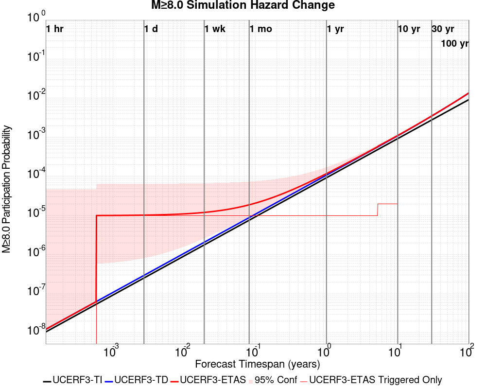
| Forecast Duration | UCERF3-ETAS [95% Conf] | UCERF3-ETAS Triggered Only | UCERF3-TD | UCERF3-ETAS/TD Gain | UCERF3-TI |
|---|---|---|---|---|---|
| 1 Hour | 1.24E-8 [1.24E-8 - 4.79E-5] | 0.000 | 1.24E-8 | 1 | 1.06E-8 |
| 1 Day | 1.03E-5 [8.19E-7 - 6.52E-5] | 1.00E-5 | 2.97E-7 | 34.7 | 2.54E-7 |
| 1 Week | 1.21E-5 [2.60E-6 - 6.70E-5] | 1.00E-5 | 2.08E-6 | 5.81 | 1.78E-6 |
| 1 Month | 1.89E-5 [9.43E-6 - 7.39E-5] | 1.00E-5 | 8.90E-6 | 2.12 | 7.63E-6 |
| 1 Year | 1.18E-4 [1.09E-4 - 1.73E-4] | 1.00E-5 | 1.08E-4 | 1.09 | 9.29E-5 |
| 10 Years | 1.12E-3 [1.10E-3 - 1.18E-3] | 2.00E-5 | 1.10E-3 | 1.02 | 9.29E-4 |
| 30 Years | 3.52E-3 [3.51E-3 - 3.58E-3] * | * | 3.50E-3 | 1.01 * | 2.78E-3 |
| 100 Years | 0.014 [0.014 - 0.014] * | * | 0.014 | 1 * | 9.25E-3 |
* forecast duration is longer than simulation length, only ETAS ruptures from the first 10 years are included

| Section Name | Strike, Dip, Rake | # Hypos In Poly | Max Mag w/ Hypo In Poly | # Surfs In Poly | Max Mag w/ Surf In Poly | Min Dist To Any (km) | Min Poly Dist To Any (km) | Min Dist To Largest (km) | Min Poly Dist To Largest (km) |
|---|---|---|---|---|---|---|---|---|---|
| Airport Lake | 358, 50, -90 | 0 | 0 | 12.124 | 2.716 | 12.221 | 2.716 | ||
| Little Lake | 327, 90, 180 | 0 | 0 | 16.936 | 4.928 | 16.936 | 4.928 | ||
| Tank Canyon | 189, 50, -90 | 0 | 0 | 17.039 | 16.895 | 17.039 | 16.895 |
These are map plots of individual catalogs from the simulations, selected as the closest catalog to each of the given percentiles in terms of total number of events.
| Duration | p0.0 %-ile | p25.0 %-ile | p50.0 %-ile | p75.0 %-ile | p90.0 %-ile | p95.0 %-ile | p97.5 %-ile | p98.0 %-ile | p99.0 %-ile | p99.5 %-ile | p99.9 %-ile | p100.0 %-ile |
|---|---|---|---|---|---|---|---|---|---|---|---|---|
| 1 Week |  |  |  | 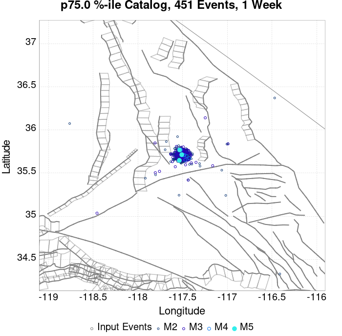 |  |  |  |  |  |  |  | 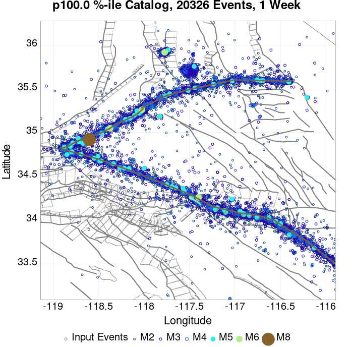 |
| 1 Month |  |  |  | 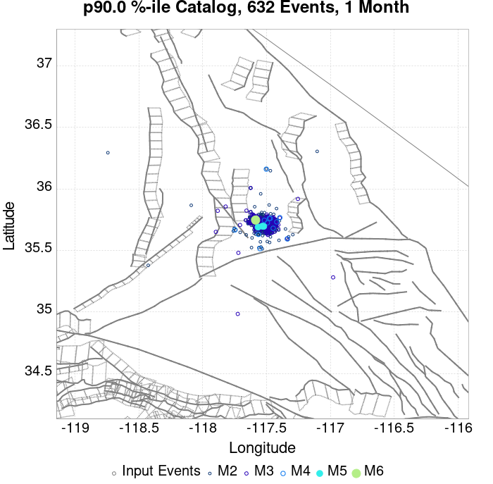 |  |  |  |  |  |  |  | |
| 1 Year |  |  |  |  |  | 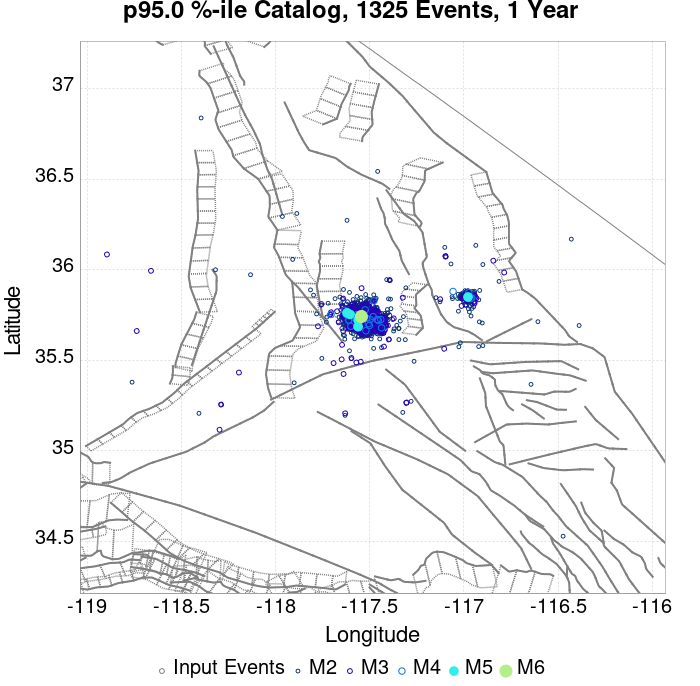 |  |  |  |  |  |  |
| 10 Year |  |  | 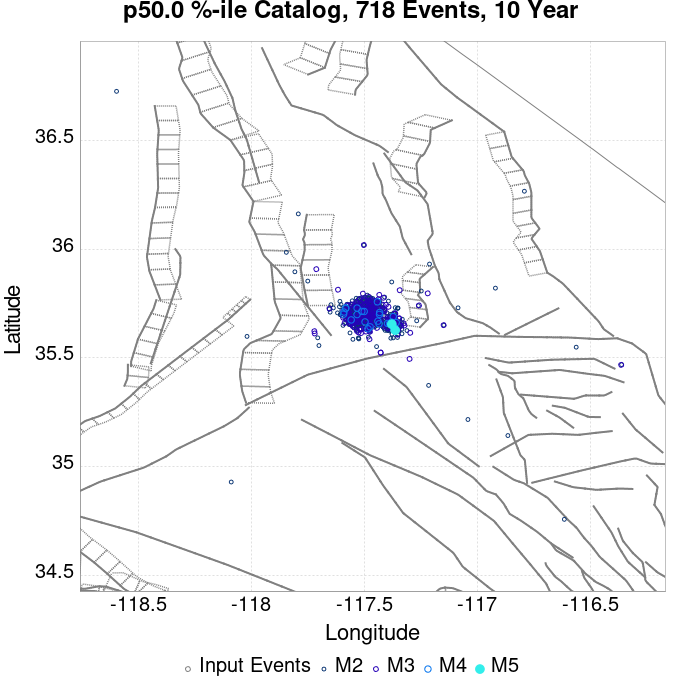 |  | 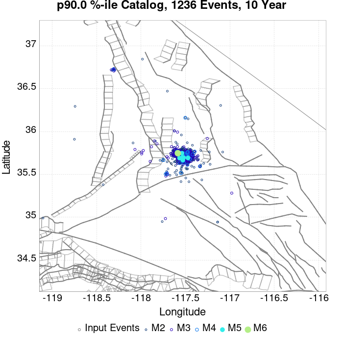 |  |  |  |  |  |  |  |
These plots compare simulated sequences with data from ComCat. All plots only consider events with hypocenters inside the ComCat region defined in the JSON input file, and consider ruptures above Mc=3.5
Last updated at 2019/09/21 04:33:47 UTC, 78.5 d after the simulation start time
| Incremental MND | Cumulative MND |
|---|---|
 |  |
| M≥3.5 | M≥4 | M≥5 | M≥6 | M≥7 | M≥8 |
|---|---|---|---|---|---|
 |  |  |  |  |  |

| 1 Day | 1 Week | 1 Month | Current (78.5 Day) | |
|---|---|---|---|---|
| M≥3.5 |  |  |  |  |
| M≥4 |  |  |  |  |
| M≥5 |  |  |  |  |
| M≥6 |  |  |  |  |
| M≥7 |  | 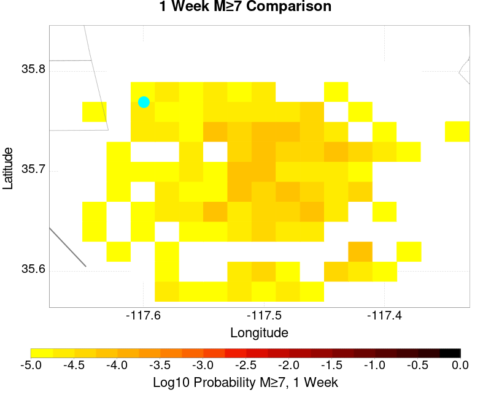 |  |  |
| M≥8 |  |  | 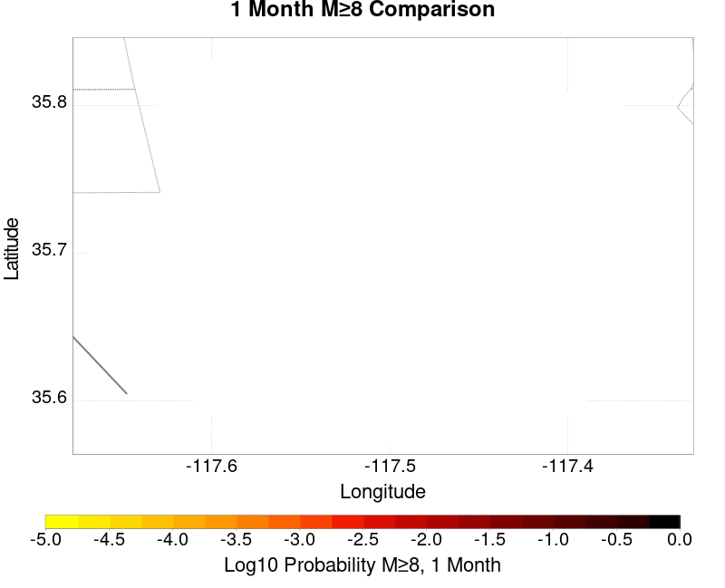 |  |
| 1 Day | 1 Week | 1 Month | Current (78.5 Day) | |
|---|---|---|---|---|
| M≥3.5 |  |  |  | |
| M≥4 |  |  |  |  |
| M≥5 |  |  |  |  |
| M≥6 |  |  |  |  |
| M≥7 |  |  |  |  |
| M≥8 |  |  |  |
| M≥3.5 | M≥4 | M≥5 | M≥6 | M≥7 | M≥8 |
|---|---|---|---|---|---|
 |  |  |  |  |
| Min Mag | 1 yr Triggered Ruptures (no spontaneous) | 10 yr Triggered Ruptures (no spontaneous) | 10 yr Triggered Ruptures (primary aftershocks only) |
|---|---|---|---|
| All Supra. Seis. |  |  | 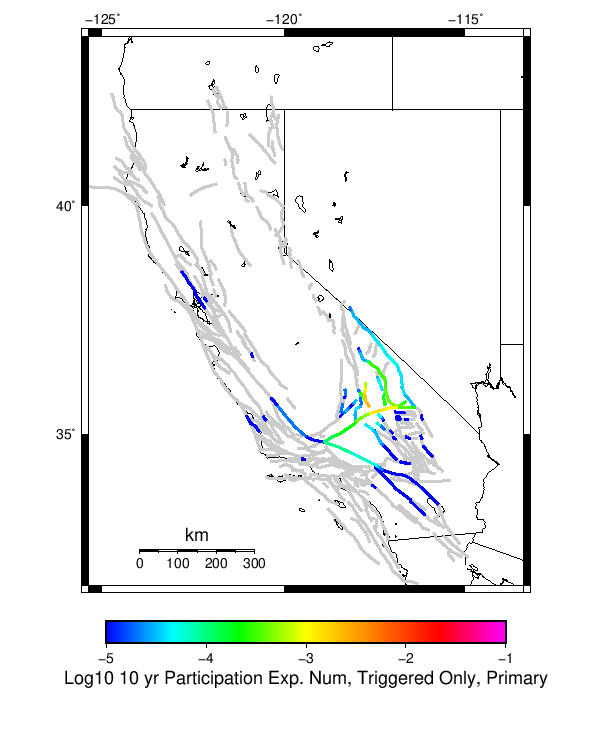 |
| M≥6.5 |  |  |  |
| M≥7 |  | 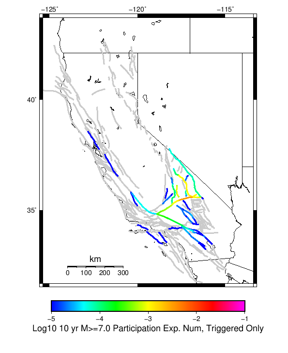 |  |
| M≥7.5 |  |  |  |
| M≥8 |  |  | 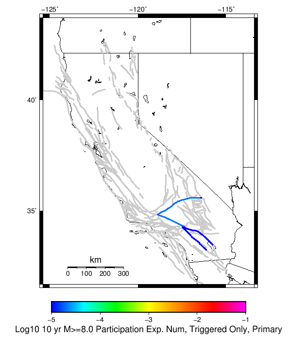 |
First 10 of 101 with matching ruptures shown
| Parent Name | Triggered 10 Year Mean Count | Triggered 1 Day Prob | Triggered 1 Week Prob | Triggered 1 Month Prob | Triggered 1 Year Prob | Triggered 10 Year Prob | Triggered 10 Year Primary Mean Count |
|---|---|---|---|---|---|---|---|
| Garlock (Central) | 0.00778 | 0.00178 | 0.00279 | 0.00357 | 0.00541 | 0.00764 | 0.00219 |
| Little Lake | 0.00634 | 0.00191 | 0.0027 | 0.0034 | 0.00486 | 0.00626 | 0.00265 |
| Airport Lake | 0.00466 | 0.00139 | 0.00215 | 0.00264 | 0.00376 | 0.00464 | 0.00206 |
| Panamint Valley | 0.00204 | 4.4E-4 | 7.8E-4 | 9.9E-4 | 0.0014 | 0.00202 | 5.6E-4 |
| Tank Canyon | 0.00151 | 2.5E-4 | 4.6E-4 | 6.7E-4 | 0.00114 | 0.0015 | 4.0E-4 |
| Owl Lake | 0.0013 | 3.0E-4 | 4.4E-4 | 6.7E-4 | 9.7E-4 | 0.0013 | 3.5E-4 |
| Garlock (East) | 0.00116 | 2.6E-4 | 3.6E-4 | 4.5E-4 | 7.9E-4 | 0.00113 | 3.5E-4 |
| Hunter Mountain-Saline Valley | 0.00105 | 2.0E-4 | 4.2E-4 | 5.4E-4 | 7.5E-4 | 0.00104 | 2.9E-4 |
| Garlock (West) | 6.9E-4 | 1.7E-4 | 2.0E-4 | 2.8E-4 | 4.1E-4 | 6.9E-4 | 2.4E-4 |
| Ash Hill | 3.9E-4 | 5.0E-5 | 1.0E-4 | 1.8E-4 | 2.6E-4 | 3.9E-4 | 8.0E-5 |
First 10 of 80 with matching ruptures shown
| Parent Name | Triggered 10 Year Mean Count | Triggered 1 Day Prob | Triggered 1 Week Prob | Triggered 1 Month Prob | Triggered 1 Year Prob | Triggered 10 Year Prob | Triggered 10 Year Primary Mean Count |
|---|---|---|---|---|---|---|---|
| Garlock (Central) | 0.00377 | 9.6E-4 | 0.00142 | 0.00187 | 0.00267 | 0.00373 | 0.00118 |
| Airport Lake | 0.00366 | 0.00112 | 0.00171 | 0.00203 | 0.00296 | 0.00366 | 0.00162 |
| Little Lake | 0.00361 | 0.00108 | 0.00155 | 0.00189 | 0.00276 | 0.0036 | 0.00149 |
| Panamint Valley | 0.00187 | 4.2E-4 | 7.5E-4 | 9.5E-4 | 0.00129 | 0.00185 | 5.4E-4 |
| Owl Lake | 0.00118 | 2.8E-4 | 4.1E-4 | 6.3E-4 | 9.0E-4 | 0.00118 | 3.3E-4 |
| Hunter Mountain-Saline Valley | 0.00105 | 2.0E-4 | 4.2E-4 | 5.4E-4 | 7.5E-4 | 0.00104 | 2.9E-4 |
| Garlock (East) | 0.00104 | 2.3E-4 | 3.2E-4 | 4.1E-4 | 7.2E-4 | 0.00104 | 3.5E-4 |
| Garlock (West) | 6.6E-4 | 1.7E-4 | 2.0E-4 | 2.7E-4 | 4.0E-4 | 6.6E-4 | 2.3E-4 |
| Tank Canyon | 3.3E-4 | 6.0E-5 | 9.0E-5 | 1.3E-4 | 2.3E-4 | 3.3E-4 | 9.0E-5 |
| San Andreas (Mojave N) | 3.2E-4 | 1.0E-4 | 1.2E-4 | 1.6E-4 | 2.2E-4 | 3.1E-4 | 9.0E-5 |
First 10 of 58 with matching ruptures shown
| Parent Name | Triggered 10 Year Mean Count | Triggered 1 Day Prob | Triggered 1 Week Prob | Triggered 1 Month Prob | Triggered 1 Year Prob | Triggered 10 Year Prob | Triggered 10 Year Primary Mean Count |
|---|---|---|---|---|---|---|---|
| Garlock (Central) | 0.00339 | 8.3E-4 | 0.00126 | 0.00168 | 0.00241 | 0.00335 | 0.00108 |
| Panamint Valley | 0.00139 | 3.1E-4 | 5.8E-4 | 7.0E-4 | 9.7E-4 | 0.00138 | 4.2E-4 |
| Owl Lake | 0.00113 | 2.8E-4 | 4.1E-4 | 6.3E-4 | 8.7E-4 | 0.00113 | 3.2E-4 |
| Hunter Mountain-Saline Valley | 9.9E-4 | 2.0E-4 | 4.2E-4 | 5.3E-4 | 7.1E-4 | 9.9E-4 | 2.9E-4 |
| Garlock (East) | 9.3E-4 | 2.3E-4 | 3.1E-4 | 3.9E-4 | 6.6E-4 | 9.3E-4 | 3.5E-4 |
| Little Lake | 9.1E-4 | 2.9E-4 | 4.4E-4 | 4.8E-4 | 7.6E-4 | 9.1E-4 | 4.0E-4 |
| Airport Lake | 8.6E-4 | 2.8E-4 | 4.1E-4 | 4.5E-4 | 7.2E-4 | 8.6E-4 | 4.0E-4 |
| Garlock (West) | 6.6E-4 | 1.7E-4 | 2.0E-4 | 2.7E-4 | 4.0E-4 | 6.6E-4 | 2.3E-4 |
| San Andreas (Mojave N) | 3.2E-4 | 1.0E-4 | 1.2E-4 | 1.6E-4 | 2.2E-4 | 3.1E-4 | 9.0E-5 |
| San Andreas (Mojave S) | 2.4E-4 | 7.0E-5 | 9.0E-5 | 1.2E-4 | 1.7E-4 | 2.4E-4 | 9.0E-5 |
First 10 of 37 with matching ruptures shown
| Parent Name | Triggered 10 Year Mean Count | Triggered 1 Day Prob | Triggered 1 Week Prob | Triggered 1 Month Prob | Triggered 1 Year Prob | Triggered 10 Year Prob | Triggered 10 Year Primary Mean Count |
|---|---|---|---|---|---|---|---|
| Garlock (Central) | 0.00148 | 3.3E-4 | 5.5E-4 | 7.0E-4 | 9.6E-4 | 0.00147 | 4.7E-4 |
| Hunter Mountain-Saline Valley | 9.6E-4 | 2.0E-4 | 4.2E-4 | 5.2E-4 | 6.9E-4 | 9.6E-4 | 2.9E-4 |
| Panamint Valley | 9.6E-4 | 2.0E-4 | 4.2E-4 | 5.2E-4 | 6.9E-4 | 9.6E-4 | 2.9E-4 |
| Garlock (West) | 6.0E-4 | 1.5E-4 | 1.8E-4 | 2.3E-4 | 3.5E-4 | 6.0E-4 | 2.1E-4 |
| Garlock (East) | 3.7E-4 | 9.0E-5 | 1.2E-4 | 1.5E-4 | 2.4E-4 | 3.7E-4 | 1.5E-4 |
| San Andreas (Mojave N) | 3.2E-4 | 1.0E-4 | 1.2E-4 | 1.6E-4 | 2.2E-4 | 3.1E-4 | 9.0E-5 |
| San Andreas (Mojave S) | 2.4E-4 | 7.0E-5 | 9.0E-5 | 1.2E-4 | 1.7E-4 | 2.4E-4 | 9.0E-5 |
| San Andreas (San Bernardino N) | 1.4E-4 | 3.0E-5 | 4.0E-5 | 5.0E-5 | 9.0E-5 | 1.4E-4 | 5.0E-5 |
| Owl Lake | 1.3E-4 | 4.0E-5 | 4.0E-5 | 5.0E-5 | 7.0E-5 | 1.3E-4 | 3.0E-5 |
| Death Valley (Black Mtns Frontal) | 7.0E-5 | 4.0E-5 | 5.0E-5 | 6.0E-5 | 6.0E-5 | 7.0E-5 | 4.0E-5 |
First 10 of 15 with matching ruptures shown
| Parent Name | Triggered 10 Year Mean Count | Triggered 1 Day Prob | Triggered 1 Week Prob | Triggered 1 Month Prob | Triggered 1 Year Prob | Triggered 10 Year Prob | Triggered 10 Year Primary Mean Count |
|---|---|---|---|---|---|---|---|
| Garlock (Central) | 2.0E-5 | 1.0E-5 | 1.0E-5 | 1.0E-5 | 1.0E-5 | 2.0E-5 | 2.0E-5 |
| Garlock (East) | 2.0E-5 | 1.0E-5 | 1.0E-5 | 1.0E-5 | 1.0E-5 | 2.0E-5 | 2.0E-5 |
| Garlock (West) | 2.0E-5 | 1.0E-5 | 1.0E-5 | 1.0E-5 | 1.0E-5 | 2.0E-5 | 2.0E-5 |
| San Andreas (Mojave N) | 2.0E-5 | 1.0E-5 | 1.0E-5 | 1.0E-5 | 1.0E-5 | 2.0E-5 | 2.0E-5 |
| San Andreas (Mojave S) | 2.0E-5 | 1.0E-5 | 1.0E-5 | 1.0E-5 | 1.0E-5 | 2.0E-5 | 2.0E-5 |
| San Andreas (San Bernardino N) | 2.0E-5 | 1.0E-5 | 1.0E-5 | 1.0E-5 | 1.0E-5 | 2.0E-5 | 2.0E-5 |
| San Andreas (Coachella) rev | 1.0E-5 | 1.0E-5 | 1.0E-5 | 1.0E-5 | 1.0E-5 | 1.0E-5 | 1.0E-5 |
| San Andreas (North Branch Mill Creek) | 1.0E-5 | 1.0E-5 | 1.0E-5 | 1.0E-5 | 1.0E-5 | 1.0E-5 | 1.0E-5 |
| San Jacinto (Anza) rev | 1.0E-5 | 0.0 | 0.0 | 0.0 | 0.0 | 1.0E-5 | 1.0E-5 |
| San Jacinto (Borrego) | 1.0E-5 | 0.0 | 0.0 | 0.0 | 0.0 | 1.0E-5 | 1.0E-5 |
The first 5 sections (sorted by trigger rate) are plotted below. All fault MPDs are available here
| 1 Week | 1 Month | 1 Year | 10 Year |
|---|---|---|---|
 |  |  |  |
 |  | 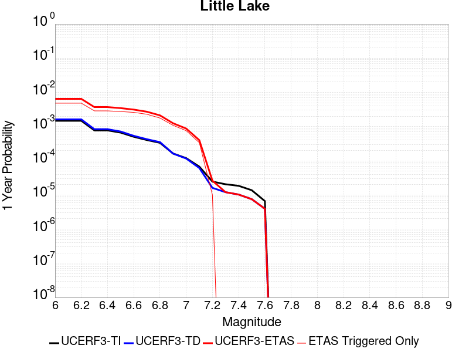 |  |
| 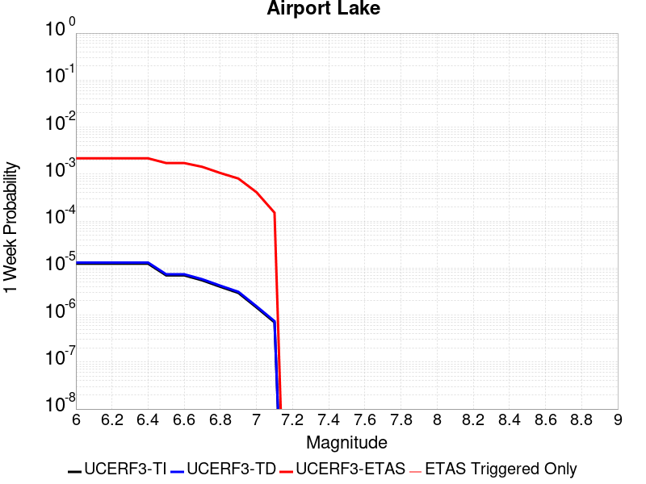 |  |  |  |
 |  |  |  |
 | 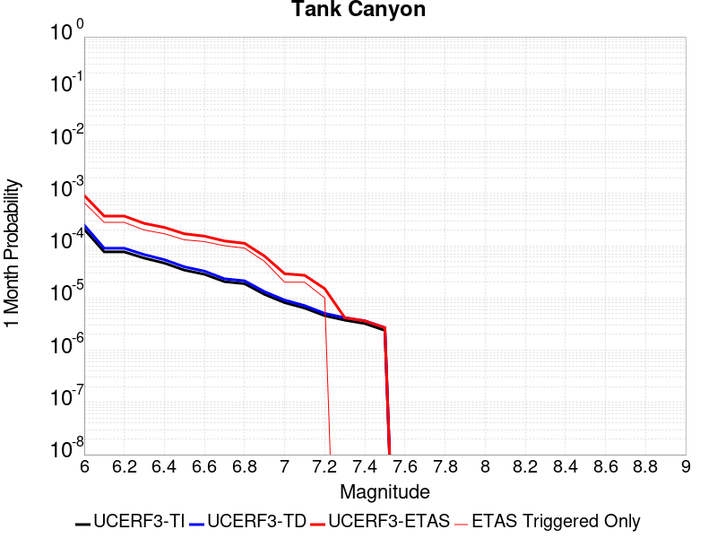 |  |  |
| Min Mag | Triggered Ruptures (no spontaneous) | Triggered Ruptures (primary aftershocks only) |
|---|---|---|
| M≥2.5 |  |  |
| M≥5 | 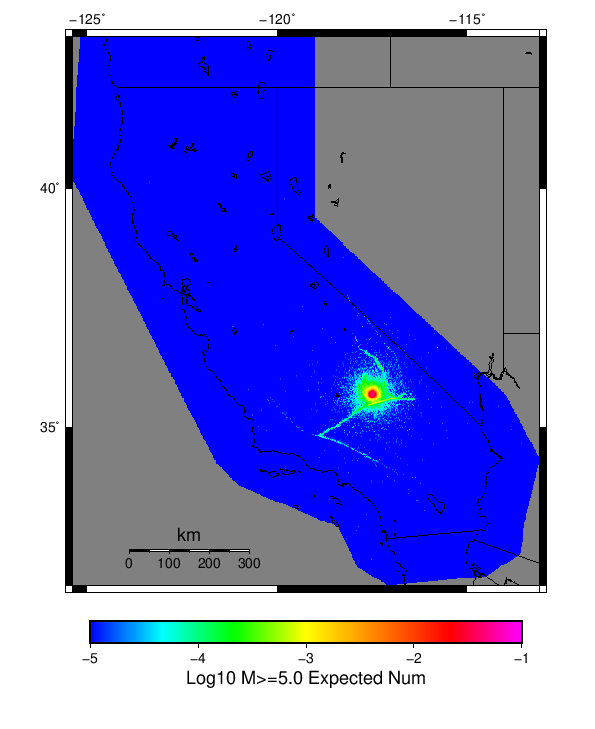 |  |
| M≥6 |  |  |
| M≥7 |  |  |
{
"numSimulations": 100000,
"duration": 10.0,
"startTimeMillis": 1562261630000,
"includeSpontaneous": false,
"randomSeed": 1568924297288,
"binaryOutput": true,
"binaryOutputFilters": [
{
"prefix": "results_complete",
"descendantsOnly": false
},
{
"prefix": "results_m5_preserve_chain",
"minMag": 5.0,
"preserveChainBelowMag": true,
"descendantsOnly": false
}
],
"forceRecalc": false,
"simulationName": "ComCat M6.4 (ci38443183), Point Sources, Impose G-R",
"numRetries": 3,
"outputDir": "${ETAS_SIM_DIR}/2019_09_19-ComCatM6p4_ci38443183_PointSources_ImposeGR",
"triggerRuptures": [
{
"occurrenceTimeMillis": 1562259775340,
"comcatEventID": "ci38443095",
"mag": 3.98,
"latitude": 35.708,
"longitude": -117.5036667,
"depth": 10.58
},
{
"occurrenceTimeMillis": 1562261629000,
"comcatEventID": "ci38443183",
"mag": 6.4,
"latitude": 35.7053333,
"longitude": -117.5038333,
"depth": 10.5
}
],
"cacheDir": "${ETAS_LAUNCHER}/inputs/cache_fm3p1_ba",
"fssFile": "${ETAS_LAUNCHER}/inputs/2013_05_10-ucerf3p3-production-10runs_COMPOUND_SOL_FM3_1_SpatSeisU3_MEAN_BRANCH_AVG_SOL.zip",
"probModel": "FULL_TD",
"applySubSeisForSupraNucl": true,
"totRateScaleFactor": 1.14,
"gridSeisCorr": true,
"timeIndependentERF": false,
"griddedOnly": false,
"imposeGR": true,
"includeIndirectTriggering": true,
"gridSeisDiscr": 0.1,
"catalogCompletenessModel": "RELAXED",
"configCommand": "u3etas_comcat_event_config_builder.sh --event-id ci38443183 --num-simulations 100000 --days-before 7 --impose-gr --mag-complete 3.5 --hpc-site USC_HPC --nodes 36 --hours 24 --queue scec",
"configTime": 1568924297288,
"comcatMetadata": {
"region": {
"centerLatitude": 35.7053333,
"centerLongitude": -117.5038333,
"radius": 15.703628043335499
},
"eventID": "ci38443183",
"minDepth": -10.0,
"maxDepth": 24.0,
"minMag": 2.5,
"startTime": 1561656829000,
"endTime": 1562261629001,
"magComplete": 3.5
}
}